Last updated 2026-10-17 02:50:12 (server time). Regenerated after every queue event.
| # | run | status | attempts | started | finished |
|---|---|---|---|---|---|
| 1 | v3_pilot: Items 1+2 pilot renders (far-glued C3, floating shadowless C4) for visual approval | done | 1 | 2026-10-15 19:49:59 | 2026-10-15 20:00:30 |
| 2 | t4_causal_v2: Item 4: five heads together, amplification, path patching into scene-flow decoder (v2) | done | 1 | 2026-10-15 20:00:44 | 2026-10-15 20:18:45 |
| 3 | t5_subspace_v2: Item 5: LEACE erasure and steering along the motion subspace, layers 17-21 (v2) | done | 1 | 2026-10-15 20:19:23 | 2026-10-15 20:36:24 |
| 4 | t3_viewsweep_v2: Item 3: 2, 3, 4, 7 input views, outputs + probes + attention (v2) | done | 1 | 2026-10-15 20:36:30 | 2026-10-15 21:01:31 |
| 5 | v3_scale: (split into v3_scale_float and v3_scale_far) | waiting for approval (gate retired) |
0 | ||
| 6 | v3_pipeline: (split into v3_pipeline_float and v3_pipeline_far) | queued | 0 | ||
| 7 | v3_viewsweep: Items 2+3: view-count sweep on the floating set | done | 1 | 2026-10-16 01:22:26 | 2026-10-16 01:40:04 |
| 8 | v3_pilot_far2: Item 1 pilot re-render: far-glued pairs kept far apart in the image | done | 1 | 2026-10-15 21:35:58 | 2026-10-15 21:40:05 |
| 9 | t8_realdata_kitti: Item 8a: KITTI scene flow 2015 (200 scenes), Any4D slope / EPE / sep_ratio, 2, 4, 7 views, square and wide input | done | 1 | 2026-10-15 21:40:18 | 2026-10-15 22:01:41 |
| 10 | t8_realdata_sintel: Item 8b: MPI Sintel training (final, clean; every 4th frame), Any4D slope / EPE / sep_ratio, 2 and 4 views, square and wide input | done | 1 | 2026-10-15 22:01:54 | 2026-10-15 22:32:35 |
| 11 | v3_scale_float: Item 2: render 70 floating shadowless scenes + 20 extra grounded epi (v2) | done | 1 | 2026-10-15 22:32:43 | 2026-10-16 00:03:34 |
| 12 | v3_pipeline_float: Item 2: Steps 3-6 + adjacency control on the floating set and v2 with 30 epi | done | 1 | 2026-10-16 01:05:40 | 2026-10-16 01:22:18 |
| 13 | v3_scale_far: Item 1: render 20 far-glued scenes (image-gap constraint) | done | 1 | 2026-10-16 00:48:25 | 2026-10-16 01:05:33 |
| 14 | v3_pipeline_far: Item 1: Steps 3-6 + adjacency control on the far-glued set | done | 1 | 2026-10-16 01:40:13 | 2026-10-16 01:43:20 |
| 15 | t7_any4d_v2: Item 7 cross-model: Any4D reference (3D/2D slope, sep_ratio, probes P + attention A at layers 0,4..24) | done | 1 | 2026-10-16 00:11:50 | 2026-10-16 00:17:28 |
| 16 | t7_mapanything_v2: Item 7 cross-model: MapAnything V1 (static, Any4D's base) outputs, probes, attention | done | 1 | 2026-10-16 01:43:28 | 2026-10-16 01:46:05 |
| 17 | t7_vggt_v2: Item 7 cross-model: VGGT-1B (static) outputs + tracks (fixed tracker head), probes, attention | done | 1 | 2026-10-16 01:46:13 | 2026-10-16 01:49:51 |
| 18 | t7_page4d_v2: Item 7 cross-model: PAGE-4D (dynamic VGGT fine-tune) outputs, probes, attention | done | 1 | 2026-10-16 01:49:59 | 2026-10-16 01:53:36 |
| 19 | t7_xm_summary: Item 7: cross-model comparison table (Any4D, MapAnything, VGGT, PAGE-4D) | done | 1 | 2026-10-16 01:55:59 | 2026-10-16 01:56:07 |
| 20 | t7_any4d_v2_100: Item 7: Any4D reference rerun on the fixed 100 v2 scenes (writes into t7_any4d_v2 results) | done | 1 | 2026-10-16 01:53:44 | 2026-10-16 01:55:51 |
| 21 | w2_kubric_baselines: Round 2 item 1 (W2): CoTracker3 + RAFT on Kubric v2 (100) and floating (70), same query sets as Any4D/VGGT; Any4D + VGGT on floating | done | 1 | 2026-10-16 15:11:22 | 2026-10-16 15:46:33 |
| 22 | w2_real_baselines: Round 2 item 1 (W2): RAFT on KITTI 2015 and Sintel (2 views), metrics + alpha/beta vs Any4D cached | done | 1 | 2026-10-16 15:46:42 | 2026-10-16 15:54:49 |
| 23 | w2_decomp: Round 2 item 1 (W2): alpha/beta decomposition and slope vs boundary distance, all models | done | 1 | 2026-10-16 15:54:57 | 2026-10-16 15:55:05 |
| 24 | w2_dose: Round 2 item 1 (W2): dose-response of the slope (speed, area, texture, occlusion, camera rotation, motions, confidence) | done | 1 | 2026-10-16 15:55:12 | 2026-10-16 15:55:49 |
| 25 | w2_summary: Round 2 item 1 (W2): summary table, figure and verdict (pull: 4D-model property or generic shrinkage?) | done | 1 | 2026-10-16 15:55:58 | 2026-10-16 15:56:05 |
| 26 | ft_render_v2: Item 10: render 200 v2-grounded training scenes (seeds 2001-2200, approved settings) | done | 1 | 2026-10-16 15:56:13 | 2026-10-16 19:20:03 |
| 27 | ft_render_float: Item 10: render 200 floating training scenes (seeds 2201-2400, approved v3float settings) | done | 1 | 2026-10-16 19:20:12 | 2026-10-16 22:48:04 |
| 28 | ft_eval_base: Item 10: evaluate base Any4D with the fine-tune evaluation (Kubric v2/v3float/v3far, internals, KITTI, Sintel) | FAILED | 4 | 2026-10-17 02:48:00 | 2026-10-17 02:48:38 |
| 29 | ft_pilot: Item 10: pilot fine-tune (heads_sf, 1000 steps) to choose the number of steps | done | 3 | 2026-10-17 01:01:23 | 2026-10-17 02:31:45 |
| 30 | ft_train_heads: Item 10: fine-tune (a) LoRA r8 on the five supply heads' slices | FAILED | 4 | 2026-10-17 02:48:46 | 2026-10-17 02:49:24 |
| 31 | ft_eval_heads: Item 10: evaluate fine-tune (a) LoRA r8 on the five supply heads' slices | queued | 0 | ||
| 32 | ft_train_ctrl: Item 10: fine-tune (d) control: LoRA r8 on 5 matched random heads | FAILED | 4 | 2026-10-17 02:49:32 | 2026-10-17 02:50:10 |
| 33 | ft_eval_ctrl: Item 10: evaluate fine-tune (d) control: LoRA r8 on 5 matched random heads | queued | 0 | ||
| 34 | ft_train_sf: Item 10: fine-tune (b) scene-flow DPT head + adaptor | queued | 3 | 2026-10-17 02:46:43 | |
| 35 | ft_eval_sf: Item 10: evaluate fine-tune (b) scene-flow DPT head + adaptor | queued | 0 | ||
| 36 | ft_train_heads_sf: Item 10: fine-tune (c) five-head LoRA + scene-flow head | queued | 3 | 2026-10-17 02:47:21 | |
| 37 | ft_eval_heads_sf: Item 10: evaluate fine-tune (c) five-head LoRA + scene-flow head | queued | 0 | ||
| 38 | ft_train_gain: Item 10: fine-tune (e) 5 learned per-head gains | queued | 0 | ||
| 39 | ft_eval_gain: Item 10: evaluate fine-tune (e) 5 learned per-head gains | queued | 0 | ||
| 40 | ft_summary: Item 10: comparison table and figure (base vs variants; a vs d head specificity; transfer; decodability gap) | queued | 0 | ||
| 41 | v4_pilot: Review item W3 pilot: 2 scenes each of epi_accel, epi_const (paired), epi_sizerand, epi_sizematch, with GT checks | done | 1 | 2026-10-16 22:48:29 | 2026-10-16 22:53:06 |
| 42 | v4_scale_epi: Review item W3: render 30 scenes per new epipolar split (120 scenes) + GT checks | done | 1 | 2026-10-16 22:53:45 | 2026-10-17 01:01:15 |
| 43 | v4_viewsweep_epi: Review item W3: 2/3/4/7-view sweep on v4 epipolar set + v3float: outputs, probes (pooled and transfer), attention, stats | queued | 0 | ||
| 44 | r2_probe_extract: Round 2 W4: control-model internals (random-init Any4D, DINOv2 + random transformer, raw encoder tokens) on v2 out100 and v3float | queued | 0 | ||
| 45 | r2_heads_null: Round 2 W5: five supply heads vs 40 matched random head sets (mean ablation), resample ablation, amplification x1.5 (v2 out100) | queued | 0 | ||
| 46 | r2_probe_linear: Round 2 W4: seeded linear probes (5 seeds) with random-init, DINOv2-only and label-shuffle controls (v2 out100, v3float) | queued | 0 | ||
| 47 | r2_probe_mlp: Round 2 W4: MLP probes vs linear, 5 seeds, label-shuffle selectivity, combined figure (v2 out100, v3float) | queued | 0 |
Supervisor heartbeat: 2026-10-17 02:49:40 running ft_train_ctrl
Items 1+2 pilot renders (far-glued C3, floating shadowless C4) for visual approval
Status: done, attempt 1, started 2026-10-15 19:49:59, finished 2026-10-15 20:00:30. Raw results, log.


Item 4: five heads together, amplification, path patching into scene-flow decoder (v2)
Status: done, attempt 1, started 2026-10-15 20:00:44, finished 2026-10-15 20:18:45. Raw results, log.


| condition | n | change in slope [95% CI] | change in epe_static [95% CI] | change in epe_moving [95% CI] | change in sep_ratio [95% CI] |
|---|---|---|---|---|---|
| abl5 | 98 | -0.599 [-0.641, -0.552] | +3.028 [+2.652, +3.418] | +56.046 [+49.429, +62.922] | -0.796 [-0.925, -0.677] |
| rand5_r0 | 98 | -0.603 [-0.688, -0.512] | +82.527 [+77.073, +88.878] | +65.643 [+56.554, +76.205] | -0.614 [-0.729, -0.502] |
| rand5_r1 | 98 | +0.013 [+0.008, +0.017] | +0.190 [+0.020, +0.356] | -0.646 [-1.056, -0.281] | -0.007 [-0.039, +0.022] |
| rand5_r2 | 98 | -0.021 [-0.032, -0.012] | +0.026 [-0.027, +0.080] | +1.060 [+0.273, +1.853] | -0.048 [-0.160, +0.026] |
| amp5_a1.5 | 98 | +0.346 [+0.318, +0.372] | +0.609 [+0.397, +0.836] | +6.702 [+2.648, +10.877] | +0.102 [-0.012, +0.212] |
| amp5_a2 | 98 | +0.565 [+0.509, +0.623] | +2.413 [+1.900, +2.987] | +35.210 [+28.445, +41.645] | +0.090 [-0.055, +0.227] |
| amp5_a3 | 98 | +0.570 [+0.463, +0.670] | +14.253 [+12.911, +15.775] | +68.018 [+58.151, +77.788] | +0.034 [-0.130, +0.193] |
| amprand_a2_r0 | 98 | -0.165 [-0.194, -0.134] | +9.694 [+9.131, +10.274] | +16.741 [+12.908, +21.048] | -0.281 [-0.397, -0.184] |
| amprand_a2_r1 | 98 | -0.016 [-0.020, -0.012] | +0.351 [+0.231, +0.482] | +0.981 [+0.571, +1.431] | -0.039 [-0.139, +0.025] |
| amprand_a2_r2 | 98 | -0.029 [-0.037, -0.022] | +0.037 [-0.005, +0.085] | +2.196 [+1.086, +3.594] | -0.055 [-0.120, +0.010] |
| abl5_sfonly | 98 | -0.597 [-0.637, -0.552] | -0.033 [-0.044, -0.022] | +55.862 [+49.374, +62.780] | -0.789 [-0.900, -0.669] |
| abl5_nonsf | 98 | +0.342 [+0.310, +0.374] | +3.142 [+2.732, +3.543] | +14.683 [+10.405, +18.671] | +0.245 [+0.145, +0.337] |
| abl5_tap0 | 98 | +0.000 [+0.000, +0.000] | +0.000 [+0.000, +0.000] | +0.000 [+0.000, +0.000] | +0.000 [+0.000, +0.000] |
| abl5_tap1 | 98 | -0.034 [-0.038, -0.031] | +0.010 [+0.005, +0.016] | +2.047 [+1.357, +2.957] | -0.066 [-0.133, -0.023] |
| abl5_tap2 | 98 | -0.464 [-0.502, -0.428] | -0.029 [-0.040, -0.018] | +44.376 [+37.258, +50.982] | -0.670 [-0.773, -0.571] |
| abl5_tap3 | 98 | -0.558 [-0.596, -0.520] | -0.024 [-0.036, -0.012] | +51.867 [+45.666, +58.910] | -0.736 [-0.844, -0.629] |
| amp5_a2_sfonly | 98 | +0.546 [+0.496, +0.601] | +0.187 [+0.138, +0.241] | +33.533 [+27.208, +39.827] | +0.068 [-0.072, +0.212] |
| amp5_a2_nonsf | 98 | +0.005 [-0.005, +0.015] | +2.341 [+1.829, +2.883] | +0.858 [-0.065, +2.004] | +0.021 [-0.012, +0.052] |
causal_v2_summary.md
| condition | n | d slope [95% CI] (p) | d epe_static [95% CI] (p) | d epe_moving [95% CI] (p) | d sep_ratio [95% CI] (p) |
|---|---|---|---|---|---|
| base | 100 | 0.607 | 4.100 | 34.957 | 0.825 |
| abl5 | 100 | -0.599 [-0.641, -0.552] (p=9.9e-25) | +3.028 [+2.644, +3.418] (p=6.4e-24) | +56.046 [+49.487, +63.222] (p=2.4e-23) | -0.796 [-0.917, -0.685] (p=3.2e-27) |
| rand5_r0 | 100 | -0.603 [-0.691, -0.509] (p=4.5e-22) | +82.527 [+76.484, +88.337] (p=1.6e-30) | +65.643 [+56.134, +75.703] (p=9.9e-25) | -0.614 [-0.748, -0.494] (p=2e-18) |
| rand5_r1 | 100 | +0.013 [+0.008, +0.017] (p=0.0032) | +0.190 [+0.018, +0.356] (p=0.035) | -0.646 [-1.033, -0.242] (p=0.02) | -0.007 [-0.039, +0.022] (p=0.83) |
| rand5_r2 | 100 | -0.021 [-0.030, -0.012] (p=0.0016) | +0.026 [-0.025, +0.078] (p=0.13) | +1.060 [+0.307, +1.815] (p=0.02) | -0.048 [-0.143, +0.026] (p=1) |
| amp5_a1.5 | 100 | +0.346 [+0.320, +0.371] (p=9.9e-25) | +0.609 [+0.409, +0.842] (p=0.00041) | +6.702 [+2.721, +10.861] (p=0.00077) | +0.102 [-0.011, +0.215] (p=0.033) |
| amp5_a2 | 100 | +0.565 [+0.510, +0.621] (p=2.4e-23) | +2.413 [+1.884, +3.011] (p=1.3e-11) | +35.210 [+28.731, +41.926] (p=5.9e-15) | +0.090 [-0.058, +0.227] (p=0.53) |
| amp5_a3 | 100 | +0.570 [+0.463, +0.683] (p=1.1e-17) | +14.253 [+12.887, +15.741] (p=1.6e-30) | +68.018 [+57.848, +77.329] (p=7.1e-21) | +0.034 [-0.126, +0.188] (p=0.83) |
| amprand_a2_r0 | 100 | -0.165 [-0.194, -0.136] (p=2.5e-13) | +9.694 [+9.141, +10.280] (p=1.6e-30) | +16.741 [+13.008, +20.851] (p=2.5e-13) | -0.281 [-0.399, -0.183] (p=3.2e-09) |
| amprand_a2_r1 | 100 | -0.016 [-0.020, -0.012] (p=3.6e-11) | +0.351 [+0.227, +0.482] (p=1.3e-05) | +0.981 [+0.574, +1.407] (p=2.6e-05) | -0.039 [-0.140, +0.027] (p=0.14) |
| amprand_a2_r2 | 100 | -0.029 [-0.037, -0.021] (p=3.6e-11) | +0.037 [-0.011, +0.086] (p=0.0066) | +2.196 [+1.129, +3.689] (p=6.6e-05) | -0.055 [-0.119, +0.008] (p=0.019) |
| abl5_sfonly | 100 | -0.597 [-0.639, -0.552] (p=6.3e-30) | -0.033 [-0.045, -0.021] (p=1.3e-11) | +55.862 [+49.332, +63.123] (p=6.2e-28) | -0.789 [-0.908, -0.681] (p=3.2e-27) |
| abl5_nonsf | 100 | +0.342 [+0.307, +0.375] (p=6.3e-30) | +3.142 [+2.751, +3.549] (p=6.4e-24) | +14.683 [+10.535, +18.844] (p=3.7e-06) | +0.245 [+0.149, +0.336] (p=1.3e-08) |
| amp5_a2_sfonly | 100 | +0.546 [+0.492, +0.597] (p=3.1e-26) | +0.187 [+0.136, +0.241] (p=2e-21) | +33.533 [+27.535, +40.204] (p=4e-14) | +0.068 [-0.071, +0.212] (p=0.83) |
| amp5_a2_nonsf | 100 | +0.005 [-0.005, +0.015] (p=0.085) | +2.341 [+1.807, +2.946] (p=1.1e-09) | +0.858 [-0.108, +2.018] (p=0.054) | +0.021 [-0.011, +0.054] (p=0.056) |
| abl5_tap0 | 100 | +0.000 [+0.000, +0.000] (p=nan) | +0.000 [+0.000, +0.000] (p=nan) | +0.000 [+0.000, +0.000] (p=nan) | +0.000 [+0.000, +0.000] (p=nan) |
| abl5_tap1 | 100 | -0.034 [-0.039, -0.031] (p=9.9e-25) | +0.010 [+0.005, +0.016] (p=1.6e-08) | +2.047 [+1.326, +2.879] (p=4.2e-07) | -0.066 [-0.133, -0.021] (p=6e-07) |
| abl5_tap2 | 100 | -0.464 [-0.502, -0.427] (p=6.2e-28) | -0.029 [-0.041, -0.018] (p=1.1e-09) | +44.376 [+38.115, +51.386] (p=6.2e-28) | -0.670 [-0.778, -0.565] (p=3.8e-22) |
| abl5_tap3 | 100 | -0.558 [-0.597, -0.519] (p=6.3e-30) | -0.024 [-0.037, -0.012] (p=1.6e-08) | +51.867 [+45.332, +58.405] (p=6.2e-28) | -0.736 [-0.847, -0.628] (p=2.9e-25) |
Item 5: LEACE erasure and steering along the motion subspace, layers 17-21 (v2)
Status: done, attempt 1, started 2026-10-15 20:19:23, finished 2026-10-15 20:36:24. Raw results, log.

| condition | n | change in slope [95% CI] | change in epe_moving [95% CI] | change in epe_static_obj [95% CI] | change in epe_bg [95% CI] |
|---|---|---|---|---|---|
| leace_L17 | 98 | -0.402 [-0.447, -0.348] | +38.038 [+32.434, +43.697] | +9.730 [+8.226, +11.254] | +11.513 [+9.845, +13.571] |
| leace_L18 | 98 | -0.368 [-0.417, -0.317] | +34.570 [+29.524, +39.565] | +7.174 [+5.963, +8.542] | +11.906 [+10.423, +13.435] |
| leace_L19 | 98 | -0.166 [-0.204, -0.130] | +13.393 [+10.523, +16.318] | +6.676 [+5.698, +7.692] | +9.856 [+8.726, +11.113] |
| leace_L20 | 98 | -0.208 [-0.237, -0.177] | +18.545 [+15.091, +22.181] | +9.312 [+7.896, +10.942] | +11.067 [+9.719, +12.466] |
| leace_L21 | 98 | -0.152 [-0.182, -0.123] | +15.413 [+12.389, +18.300] | +8.094 [+6.548, +9.835] | +7.760 [+6.356, +9.285] |
| leace_all | 98 | -0.528 [-0.582, -0.476] | +49.998 [+43.372, +57.259] | +14.456 [+12.472, +16.420] | +17.634 [+15.746, +19.696] |
| rand_L19 | 98 | +0.002 [+0.002, +0.003] | -0.054 [-0.106, +0.005] | +0.079 [+0.043, +0.117] | +0.069 [+0.030, +0.107] |
| rand_all | 98 | -0.007 [-0.010, -0.005] | +0.373 [+0.160, +0.591] | +0.091 [-0.054, +0.221] | +0.169 [+0.067, +0.271] |
| steer_mov_b0.5 | 98 | -0.039 [-0.050, -0.029] | +2.284 [+1.457, +3.179] | -0.164 [-0.239, -0.090] | -0.102 [-0.149, -0.052] |
| steer_mov_b1 | 98 | -0.077 [-0.093, -0.061] | +5.371 [+3.989, +6.980] | -0.110 [-0.232, +0.006] | -0.041 [-0.133, +0.051] |
| steer_mov_b2 | 98 | -0.108 [-0.131, -0.086] | +9.446 [+7.487, +11.583] | +0.808 [+0.487, +1.253] | +0.677 [+0.450, +0.919] |
| steer_stat_b1 | 98 | -0.036 [-0.044, -0.028] | +2.573 [+1.680, +3.609] | +3.151 [+2.611, +3.756] | +0.801 [+0.606, +1.012] |
| steer_stat_b2 | 98 | -0.060 [-0.071, -0.048] | +4.325 [+3.000, +5.561] | +6.357 [+5.555, +7.219] | +1.557 [+1.233, +1.908] |
| steerrand_mov_b2 | 98 | -0.103 [-0.122, -0.084] | +7.788 [+6.122, +9.671] | +0.387 [+0.153, +0.638] | +0.432 [+0.285, +0.604] |
| steerrand_stat_b2 | 98 | -0.002 [-0.010, +0.005] | -0.031 [-0.809, +0.711] | +4.499 [+3.590, +5.410] | +0.914 [+0.683, +1.176] |
| steer_mov_all_b1 | 98 | -0.409 [-0.460, -0.360] | +41.084 [+36.002, +46.727] | +4.910 [+3.568, +6.472] | +4.125 [+3.376, +4.954] |
| steer_stat_all_b1 | 98 | -0.195 [-0.228, -0.160] | +15.861 [+12.403, +19.399] | +8.973 [+7.629, +10.363] | +3.818 [+3.154, +4.460] |
Eraser fits (training fold; linear R^2 of 'moving' before and after erasure):
| fit | before | after |
|---|---|---|
| fold0_L17 | 0.595 | 0.095 |
| fold0_L18 | 0.592 | 0.159 |
| fold0_L19 | 0.652 | 0.069 |
| fold0_L20 | 0.696 | 0.258 |
| fold0_L21 | 0.750 | 0.100 |
| fold1_L17 | 0.573 | 0.130 |
| fold1_L18 | 0.570 | 0.172 |
| fold1_L19 | 0.627 | 0.124 |
| fold1_L20 | 0.677 | 0.040 |
| fold1_L21 | 0.719 | 0.019 |
subspace_v2_summary.md
| condition | n | d slope [95% CI] (p) | d epe_moving [95% CI] (p) | d epe_static_obj [95% CI] (p) | d epe_bg [95% CI] (p) | d spurious_static_obj [95% CI] (p) |
|---|---|---|---|---|---|---|
| base | 100 | 0.607 | 34.957 | 4.138 | 4.125 | 4.138 |
| leace_L17 | 100 | -0.402 [-0.449, -0.351] (p=1.1e-18) | +38.038 [+32.118, +43.972] (p=9.4e-20) | +9.730 [+8.166, +11.271] (p=2.7e-20) | +11.513 [+9.673, +13.375] (p=1.6e-28) | +9.730 [+8.148, +11.251] (p=2.7e-20) |
| leace_L18 | 100 | -0.368 [-0.421, -0.313] (p=4e-14) | +34.570 [+29.498, +39.969] (p=4.5e-22) | +7.174 [+5.960, +8.460] (p=3.3e-18) | +11.906 [+10.402, +13.403] (p=1.6e-30) | +7.174 [+5.997, +8.453] (p=3.3e-18) |
| leace_L19 | 100 | -0.166 [-0.201, -0.130] (p=3.9e-08) | +13.393 [+10.685, +16.170] (p=7.4e-12) | +6.676 [+5.756, +7.681] (p=6.4e-24) | +9.856 [+8.698, +11.076] (p=1.6e-28) | +6.676 [+5.648, +7.671] (p=6.4e-24) |
| leace_L20 | 100 | -0.208 [-0.239, -0.179] (p=9.9e-17) | +18.545 [+15.150, +22.090] (p=9.9e-17) | +9.312 [+7.857, +10.820] (p=2.6e-25) | +11.067 [+9.713, +12.587] (p=1.6e-28) | +9.312 [+7.885, +10.824] (p=2.6e-25) |
| leace_L21 | 100 | -0.152 [-0.183, -0.123] (p=4e-14) | +15.413 [+12.457, +18.483] (p=1.1e-18) | +8.094 [+6.491, +9.684] (p=3.3e-18) | +7.760 [+6.313, +9.208] (p=2.6e-25) | +8.094 [+6.508, +9.836] (p=3.3e-18) |
| leace_all | 100 | -0.528 [-0.580, -0.473] (p=7.1e-21) | +49.998 [+43.168, +56.996] (p=4.5e-22) | +14.456 [+12.475, +16.624] (p=8e-27) | +17.634 [+15.719, +19.562] (p=1.6e-28) | +14.456 [+12.530, +16.387] (p=8e-27) |
| rand_L19 | 100 | +0.002 [+0.001, +0.003] (p=1.3e-06) | -0.054 [-0.111, +0.007] (p=0.61) | +0.079 [+0.043, +0.118] (p=0.0018) | +0.069 [+0.033, +0.106] (p=0.012) | +0.079 [+0.040, +0.116] (p=0.0018) |
| rand_all | 100 | -0.007 [-0.010, -0.005] (p=1e-05) | +0.373 [+0.155, +0.598] (p=0.011) | +0.091 [-0.037, +0.227] (p=0.089) | +0.169 [+0.073, +0.264] (p=0.035) | +0.091 [-0.039, +0.223] (p=0.089) |
| steer_mov_b0.5 | 100 | -0.039 [-0.050, -0.030] (p=2.9e-09) | +2.284 [+1.430, +3.120] (p=0.00016) | -0.164 [-0.244, -0.088] (p=0.0016) | -0.102 [-0.151, -0.049] (p=1e-05) | -0.164 [-0.242, -0.092] (p=0.0016) |
| steer_mov_b1 | 100 | -0.077 [-0.093, -0.062] (p=9.9e-17) | +5.371 [+3.927, +6.817] (p=2.9e-09) | -0.110 [-0.228, +0.015] (p=0.02) | -0.041 [-0.128, +0.050] (p=0.19) | -0.110 [-0.230, +0.010] (p=0.02) |
| steer_mov_b2 | 100 | -0.108 [-0.130, -0.084] (p=2.5e-13) | +9.446 [+7.365, +11.576] (p=4e-14) | +0.808 [+0.448, +1.191] (p=0.00077) | +0.677 [+0.458, +0.917] (p=6.6e-05) | +0.808 [+0.470, +1.229] (p=0.00077) |
| steer_stat_b1 | 100 | -0.036 [-0.045, -0.028] (p=8.1e-16) | +2.573 [+1.699, +3.578] (p=3.7e-06) | +3.151 [+2.584, +3.678] (p=3.1e-17) | +0.801 [+0.593, +1.002] (p=1.6e-08) | +3.151 [+2.582, +3.744] (p=3.1e-17) |
| steer_stat_b2 | 100 | -0.060 [-0.072, -0.048] (p=5.9e-15) | +4.325 [+3.025, +5.785] (p=1e-05) | +6.357 [+5.484, +7.242] (p=2.6e-25) | +1.557 [+1.208, +1.897] (p=1.3e-14) | +6.357 [+5.480, +7.306] (p=2.6e-25) |
| steerrand_mov_b2 | 100 | -0.103 [-0.122, -0.084] (p=1.1e-17) | +7.788 [+5.914, +9.682] (p=7.1e-10) | +0.387 [+0.174, +0.642] (p=0.0061) | +0.432 [+0.284, +0.610] (p=4.2e-07) | +0.387 [+0.174, +0.633] (p=0.0061) |
| steerrand_stat_b2 | 100 | -0.002 [-0.010, +0.005] (p=0.19) | -0.031 [-0.813, +0.732] (p=0.48) | +4.499 [+3.545, +5.490] (p=2e-21) | +0.914 [+0.693, +1.174] (p=2.6e-12) | +4.499 [+3.582, +5.459] (p=2e-21) |
| steer_mov_all_b1 | 100 | -0.409 [-0.457, -0.356] (p=9.9e-25) | +41.084 [+35.862, +46.562] (p=3.1e-26) | +4.910 [+3.573, +6.490] (p=4e-14) | +4.125 [+3.349, +4.965] (p=6.3e-30) | +4.910 [+3.608, +6.423] (p=4e-14) |
| steer_stat_all_b1 | 100 | -0.195 [-0.227, -0.165] (p=1.1e-17) | +15.861 [+12.186, +19.571] (p=1.7e-10) | +8.973 [+7.630, +10.420] (p=6.4e-24) | +3.818 [+3.225, +4.499] (p=2e-21) | +8.973 [+7.706, +10.336] (p=6.4e-24) |
Item 3: 2, 3, 4, 7 input views, outputs + probes + attention (v2)
Status: done, attempt 1, started 2026-10-15 20:36:30, finished 2026-10-15 21:01:31. Raw results, log.

| views | moving vs static AUC, view 0 (all) (first / last layer) | moving vs static AUC, epipolar-aligned (first / last layer) | same-body pair AUC (object pairs) (first / last layer) | probe object-motion slope (first / last layer) |
|---|---|---|---|---|
| 2 | 0.567 / 0.989 | 0.369 / 0.993 | 0.768 / 0.915 | 0.069 / 0.432 |
| 3 | 0.569 / 0.998 | 0.379 / 0.997 | 0.768 / 0.910 | 0.069 / 0.470 |
| 4 | 0.569 / 0.998 | 0.379 / 0.998 | 0.768 / 0.907 | 0.069 / 0.492 |
| 7 | 0.569 / 0.998 | 0.379 / 0.998 | 0.768 / 0.913 | 0.069 / 0.496 |
| views | output separation ratio, frame 0 to 23 (median over scenes) | n scenes |
|---|---|---|
| 2 | 0.741 | 89 |
| 3 | 0.721 | 89 |
| 4 | 0.788 | 89 |
| 7 | 0.726 | 89 |
Items 2+3: view-count sweep on the floating set
Status: done, attempt 1, started 2026-10-16 01:22:26, finished 2026-10-16 01:40:04. Raw results, log.
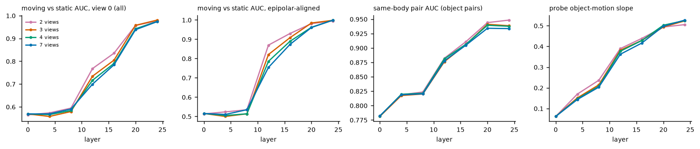
| views | moving vs static AUC, view 0 (all) (first / last layer) | moving vs static AUC, epipolar-aligned (first / last layer) | same-body pair AUC (object pairs) (first / last layer) | probe object-motion slope (first / last layer) |
|---|---|---|---|---|
| 2 | 0.565 / 0.977 | 0.513 / 0.995 | 0.781 / 0.948 | 0.061 / 0.505 |
| 3 | 0.569 / 0.980 | 0.515 / 0.998 | 0.781 / 0.939 | 0.062 / 0.524 |
| 4 | 0.569 / 0.974 | 0.515 / 0.999 | 0.782 / 0.938 | 0.062 / 0.525 |
| 7 | 0.569 / 0.973 | 0.515 / 0.999 | 0.782 / 0.934 | 0.062 / 0.527 |
| views | output separation ratio, frame 0 to 23 (median over scenes) | n scenes |
|---|---|---|
| 2 | 0.735 | 38 |
| 3 | 0.680 | 38 |
| 4 | 0.675 | 38 |
| 7 | 0.681 | 38 |
Item 1 pilot re-render: far-glued pairs kept far apart in the image
Status: done, attempt 1, started 2026-10-15 21:35:58, finished 2026-10-15 21:40:05. Raw results, log.


Item 8a: KITTI scene flow 2015 (200 scenes), Any4D slope / EPE / sep_ratio, 2, 4, 7 views, square and wide input
Status: done, attempt 1, started 2026-10-15 21:40:18, finished 2026-10-15 22:01:41. Raw results, log.

Item 8b: MPI Sintel training (final, clean; every 4th frame), Any4D slope / EPE / sep_ratio, 2 and 4 views, square and wide input
Status: done, attempt 1, started 2026-10-15 22:01:54, finished 2026-10-15 22:32:35. Raw results, log.
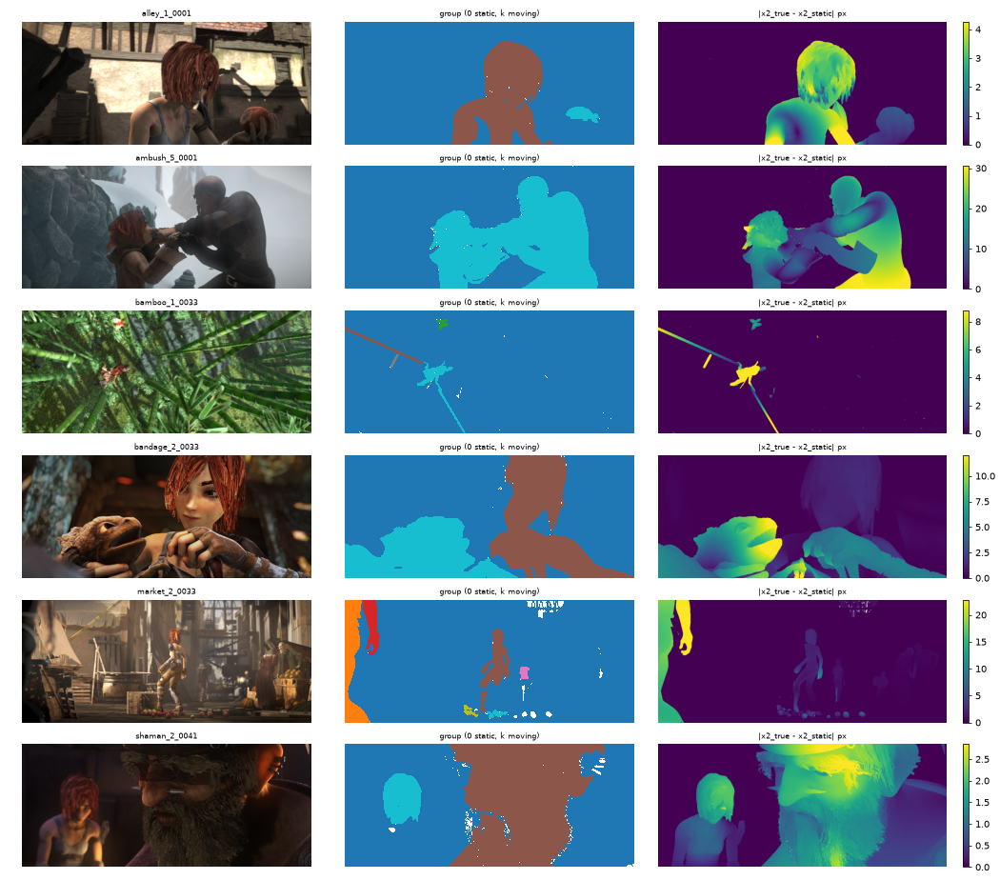
Item 2: render 70 floating shadowless scenes + 20 extra grounded epi (v2)
Status: done, attempt 1, started 2026-10-15 22:32:43, finished 2026-10-16 00:03:34. Raw results, log.
Item 2: Steps 3-6 + adjacency control on the floating set and v2 with 30 epi
Status: done, attempt 1, started 2026-10-16 01:05:40, finished 2026-10-16 01:22:18. Raw results, log.
Item 1: render 20 far-glued scenes (image-gap constraint)
Status: done, attempt 1, started 2026-10-16 00:48:25, finished 2026-10-16 01:05:33. Raw results, log.
Item 1: Steps 3-6 + adjacency control on the far-glued set
Status: done, attempt 1, started 2026-10-16 01:40:13, finished 2026-10-16 01:43:20. Raw results, log.
Item 7 cross-model: Any4D reference (3D/2D slope, sep_ratio, probes P + attention A at layers 0,4..24)
Status: done, attempt 1, started 2026-10-16 00:11:50, finished 2026-10-16 00:17:28. Raw results, log.
xm_output_any4d_summary.md
| metric | mean | median | n |
|---|---|---|---|
| align_scale | 3.0688 | 3.0656 | 120 |
| align_rmse | 0.1411 | 0.1249 | 120 |
| median_true_disp3d | 2.3388 | 2.3434 | 118 |
| slope3d | 0.9836 | 0.9844 | 117 |
| epe3d_static | 0.1332 | 0.1225 | 120 |
| epe3d_moving | 0.2579 | 0.1784 | 118 |
| slope3d_flow | 0.5940 | 0.6580 | 117 |
| epe3d_static_flow | 0.0034 | 0.0034 | 120 |
| epe3d_moving_flow | 0.8628 | 0.6699 | 118 |
| sep_gt | 21.1408 | 25.4433 | 118 |
| slope2d | 0.6050 | 0.6619 | 117 |
| epe_static | 4.0341 | 3.8025 | 120 |
| epe_moving | 36.5558 | 30.0682 | 118 |
| sep_pred | 16.5939 | 14.6443 | 118 |
| sep_ratio | 0.8259 | 0.7512 | 89 |
| slope2d_q | 0.6039 | 0.6614 | 117 |
| epe_static_q | 4.0285 | 3.7729 | 120 |
| epe_moving_q | 36.6064 | 30.1741 | 118 |
| sep_pred_q | 16.5939 | 14.6443 | 118 |
| sep_ratio_q | 0.8259 | 0.7512 | 89 |
| slope3d_track | 0.5789 | 0.6499 | 117 |
| slope3d_q | 0.9840 | 0.9866 | 117 |
Item 7 cross-model: MapAnything V1 (static, Any4D's base) outputs, probes, attention
Status: done, attempt 1, started 2026-10-16 01:43:28, finished 2026-10-16 01:46:05. Raw results, log.
xm_output_mapanything_summary.md
| metric | mean | median | n |
|---|---|---|---|
| align_scale | 4.7920 | 4.7222 | 100 |
| align_rmse | 0.2612 | 0.2507 | 100 |
| median_true_disp3d | 2.3630 | 2.3707 | 98 |
| slope3d | 0.9191 | 0.9322 | 98 |
| epe3d_static | 0.1588 | 0.1568 | 100 |
| epe3d_moving | 0.3917 | 0.3151 | 98 |
| sep_gt | 25.4553 | 27.6463 | 98 |
Item 7 cross-model: VGGT-1B (static) outputs + tracks (fixed tracker head), probes, attention
Status: done, attempt 1, started 2026-10-16 01:46:13, finished 2026-10-16 01:49:51. Raw results, log.
xm_output_vggt_summary.md
| metric | mean | median | n |
|---|---|---|---|
| align_scale | 21.5576 | 21.8734 | 100 |
| align_rmse | 0.1265 | 0.1001 | 100 |
| median_true_disp3d | 2.3630 | 2.3707 | 98 |
| slope3d | 1.0153 | 0.9953 | 98 |
| epe3d_static | 0.1527 | 0.0810 | 100 |
| epe3d_moving | 0.1737 | 0.1325 | 98 |
| align_rmse_head | 0.1265 | 0.1034 | 100 |
| slope3d_head | 1.0167 | 0.9883 | 98 |
| epe3d_static_head | 0.1330 | 0.0671 | 100 |
| epe3d_moving_head | 0.1727 | 0.1261 | 98 |
| sep_gt | 25.4553 | 27.6463 | 98 |
| slope2d_q | 0.3439 | 0.2911 | 98 |
| epe_static_q | 9.6846 | 5.8218 | 100 |
| epe_moving_q | 57.5506 | 52.6230 | 98 |
| sep_pred_q | 4.8884 | 2.9189 | 98 |
| sep_ratio_q | 0.2280 | 0.1184 | 89 |
| track_self_offset | 0.0000 | 0.0000 | 100 |
| slope3d_track | 0.3527 | 0.4312 | 98 |
| slope3d_q | 1.0157 | 0.9944 | 98 |
Item 7 cross-model: PAGE-4D (dynamic VGGT fine-tune) outputs, probes, attention
Status: done, attempt 1, started 2026-10-16 01:49:59, finished 2026-10-16 01:53:36. Raw results, log.
xm_output_page4d_summary.md
| metric | mean | median | n |
|---|---|---|---|
| align_scale | 20.6718 | 21.1419 | 100 |
| align_rmse | 0.1627 | 0.1366 | 100 |
| median_true_disp3d | 2.3630 | 2.3707 | 98 |
| slope3d | 1.0239 | 0.9673 | 98 |
| epe3d_static | 0.3488 | 0.2526 | 100 |
| epe3d_moving | 0.3208 | 0.2270 | 98 |
| align_rmse_head | 0.1261 | 0.0908 | 100 |
| slope3d_head | 1.0300 | 0.9883 | 98 |
| epe3d_static_head | 0.1921 | 0.0942 | 100 |
| epe3d_moving_head | 0.2540 | 0.1643 | 98 |
| sep_gt | 25.4553 | 27.6463 | 98 |
Item 7: cross-model comparison table (Any4D, MapAnything, VGGT, PAGE-4D)
Status: done, attempt 1, started 2026-10-16 01:55:59, finished 2026-10-16 01:56:07. Raw results, log.
Item 7: Any4D reference rerun on the fixed 100 v2 scenes (writes into t7_any4d_v2 results)
Status: done, attempt 1, started 2026-10-16 01:53:44, finished 2026-10-16 01:55:51. Raw results, log.
Round 2 item 1 (W2): CoTracker3 + RAFT on Kubric v2 (100) and floating (70), same query sets as Any4D/VGGT; Any4D + VGGT on floating
Status: done, attempt 1, started 2026-10-16 15:11:22, finished 2026-10-16 15:46:33. Raw results, log.
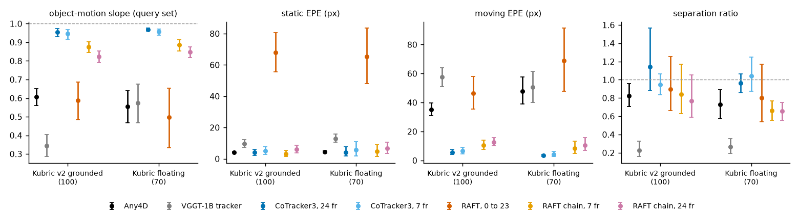
w2_kubric_baselines_summary.md
Same scenes and query sets as e5_xm_eval.py (slope2d_q, epe_*_q, sep_ratio_q). Mean over scenes with bootstrap 95% CI; last column is the paired per-scene difference (model minus Any4D) with a two-sided sign test.
| model | data | n | slope2d_q | epe_static_q | epe_moving_q | sep_ratio_q | paired slope2d_q diff vs Any4D [sign test p] |
|---|---|---|---|---|---|---|---|
| Any4D | v2 | 100 | 0.61 [0.56, 0.65] | 4.10 [3.82, 4.39] | 35.03 [30.93, 39.64] | 0.83 [0.70, 0.96] | reference |
| Any4D | v3float | 69 | 0.56 [0.47, 0.64] | 4.53 [4.11, 5.03] | 47.88 [38.97, 57.61] | 0.73 [0.57, 0.89] | reference |
| VGGT-1B tracker | v2 | 100 | 0.34 [0.29, 0.41] | 9.68 [7.49, 12.32] | 57.55 [51.12, 63.95] | 0.23 [0.16, 0.33] | -0.26 [-0.34, -0.18] [p 3.7e-06, 26+/72-] |
| VGGT-1B tracker | v3float | 69 | 0.57 [0.47, 0.68] | 12.95 [10.55, 15.68] | 50.48 [40.00, 61.35] | 0.27 [0.19, 0.35] | 0.02 [-0.10, 0.14] [p 0.620, 30+/35-] |
| CoTracker3, 24 fr | v2 | 100 | 0.96 [0.93, 0.97] | 3.97 [2.29, 6.05] | 5.56 [3.98, 7.75] | 1.14 [0.88, 1.57] | 0.35 [0.31, 0.39] [p 9.9e-25, 95+/3-] |
| CoTracker3, 24 fr | v3float | 69 | 0.97 [0.96, 0.98] | 4.21 [1.70, 7.76] | 3.43 [2.67, 4.31] | 0.96 [0.86, 1.07] | 0.41 [0.33, 0.50] [p 3.9e-14, 61+/4-] |
| CoTracker3, 7 fr | v2 | 100 | 0.95 [0.92, 0.97] | 4.97 [2.77, 7.68] | 6.48 [4.51, 8.99] | 0.95 [0.84, 1.07] | 0.34 [0.30, 0.38] [p 2.4e-23, 94+/4-] |
| CoTracker3, 7 fr | v3float | 69 | 0.96 [0.94, 0.97] | 5.76 [1.87, 10.96] | 4.31 [2.91, 6.31] | 1.04 [0.87, 1.25] | 0.40 [0.32, 0.49] [p 4.9e-13, 60+/5-] |
| RAFT, 0 to 23 | v2 | 100 | 0.59 [0.48, 0.69] | 67.97 [55.41, 80.73] | 46.28 [35.49, 57.86] | 0.90 [0.66, 1.25] | -0.02 [-0.12, 0.08] [p 0.006, 63+/35-] |
| RAFT, 0 to 23 | v3float | 69 | 0.50 [0.33, 0.65] | 65.34 [48.04, 83.46] | 68.74 [47.83, 91.31] | 0.80 [0.54, 1.17] | -0.06 [-0.20, 0.08] [p 0.136, 39+/26-] |
| RAFT chain, 7 fr | v2 | 100 | 0.88 [0.84, 0.90] | 3.16 [1.41, 5.30] | 10.49 [7.64, 13.85] | 0.84 [0.63, 1.17] | 0.27 [0.23, 0.31] [p 8.1e-16, 87+/11-] |
| RAFT chain, 7 fr | v3float | 69 | 0.89 [0.85, 0.91] | 4.71 [1.48, 9.03] | 8.26 [4.98, 13.36] | 0.66 [0.56, 0.77] | 0.33 [0.26, 0.41] [p 4.3e-11, 58+/7-] |
| RAFT chain, 24 fr | v2 | 100 | 0.82 [0.79, 0.85] | 6.07 [3.87, 8.57] | 12.74 [10.25, 15.59] | 0.77 [0.59, 1.06] | 0.22 [0.17, 0.26] [p 1.4e-12, 83+/15-] |
| RAFT chain, 24 fr | v3float | 69 | 0.85 [0.82, 0.88] | 6.60 [3.43, 10.63] | 10.47 [7.13, 15.76] | 0.65 [0.55, 0.75] | 0.29 [0.22, 0.37] [p 4.3e-11, 58+/7-] |
Scenes with evaluation errors: {'any4d|v2': 0, 'any4d|v3float': 0, 'vggt|v2': 0, 'vggt|v3float': 0, 'cotracker3_24f|v2': 0, 'cotracker3_24f|v3float': 0, 'cotracker3_7f|v2': 0, 'cotracker3_7f|v3float': 0, 'raft_direct|v2': 0, 'raft_direct|v3float': 0, 'raft_chain7|v2': 0, 'raft_chain7|v3float': 0, 'raft_chain24|v2': 0, 'raft_chain24|v3float': 0}

Round 2 item 1 (W2): RAFT on KITTI 2015 and Sintel (2 views), metrics + alpha/beta vs Any4D cached
Status: done, attempt 1, started 2026-10-16 15:46:42, finished 2026-10-16 15:54:49. Raw results, log.
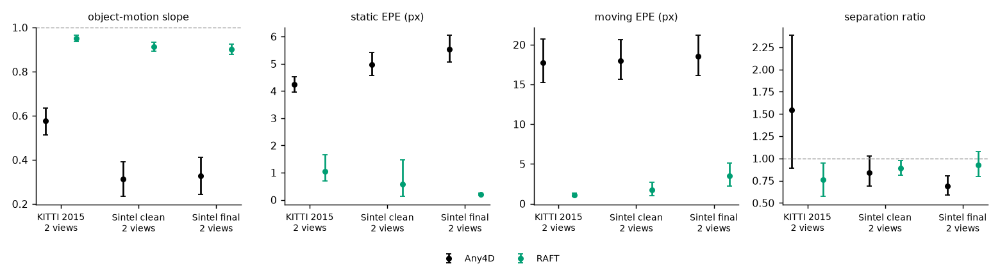
w2_real_baselines_summary.md
RAFT: torchvision raft_large, C_T_V2 weights (FlyingChairs + FlyingThings; no KITTI or Sintel training), native resolution. Any4D: round-1 2-view wide-input predictions (cached). Metrics: e5_realdata_eval.evaluate on the same evaluation points (the alpha/beta decomposition is in w2_decomp). Bootstrap 95% CIs over scenes; paired sign test vs Any4D.
| model | data | n | slope | epe_static | epe_moving | sep_ratio | paired slope diff vs Any4D [sign test p] |
|---|---|---|---|---|---|---|---|
| Any4D | kitti15_rgb | 200 | 0.58 [0.51, 0.64] | 4.23 [3.96, 4.52] | 17.77 [15.22, 20.69] | 1.55 [0.89, 2.38] | reference |
| Any4D | sintel_clean | 256 | 0.31 [0.23, 0.39] | 4.98 [4.58, 5.42] | 18.01 [15.64, 20.59] | 0.84 [0.69, 1.02] | reference |
| Any4D | sintel_final | 256 | 0.33 [0.24, 0.41] | 5.54 [5.07, 6.05] | 18.54 [16.14, 21.17] | 0.69 [0.59, 0.81] | reference |
| raft | kitti15_rgb | 200 | 0.95 [0.94, 0.96] | 1.04 [0.69, 1.66] | 1.08 [0.91, 1.30] | 0.76 [0.57, 0.95] | 0.38 [0.31, 0.44] [p 9.0e-18, 156+/39-] |
| raft | sintel_clean | 256 | 0.91 [0.89, 0.93] | 0.58 [0.13, 1.48] | 1.73 [0.97, 2.66] | 0.89 [0.81, 0.98] | 0.60 [0.52, 0.68] [p 2.3e-31, 190+/27-] |
| raft | sintel_final | 256 | 0.90 [0.88, 0.92] | 0.21 [0.17, 0.25] | 3.53 [2.22, 5.07] | 0.93 [0.80, 1.08] | 0.57 [0.49, 0.66] [p 2.3e-27, 185+/32-] |

Round 2 item 1 (W2): alpha/beta decomposition and slope vs boundary distance, all models
Status: done, attempt 1, started 2026-10-16 15:54:57, finished 2026-10-16 15:55:05. Raw results, log.
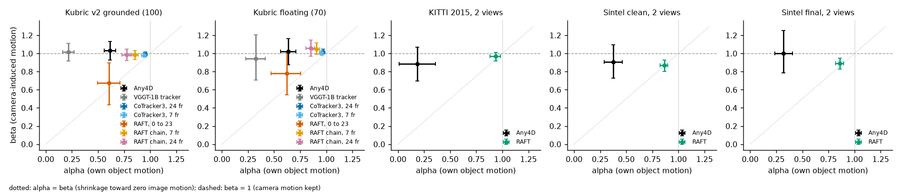
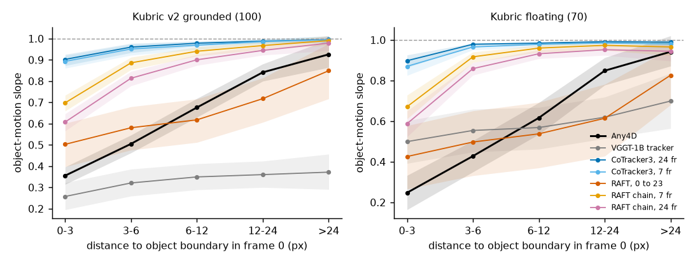
w2_decomp_summary.md
Per scene, on moving query points with |x_true - x_static| > 2 px: x_pred - x1 = alpha (x_true - x_static) + beta (x_static - x1) + e (least squares over both coordinates). Pure camera-motion pull: beta near 1, alpha < 1. Shrinkage toward zero image motion: alpha near beta, both < 1. beta_static is the same fit on static points (only beta). alpha and beta are only separable when the object's motion is not parallel to the camera-induced motion and both are visible: alpha, beta and their tests use only scenes where the condition number of [A B] is at most 10 and the median |A| and |B| are at least 2 px (column n: identifiable of all scenes). Epipolar-aligned scenes, most KITTI cars and Sintel shots with a near-static camera fail this guard. slope and beta_static use all scenes. Mean over scenes [bootstrap 95% CI]; sign tests are two-sided.
| model | data | n | slope | alpha | beta | beta_static | alpha - beta [sign p] | beta vs 1 [sign p] | median abs cos(A,B) | median alpha, beta over all scenes (no guard) |
|---|---|---|---|---|---|---|---|---|---|---|
| Any4D | v2 | 84 of 100 | 0.61 [0.56, 0.65] | 0.61 [0.56, 0.67] | 1.03 [0.93, 1.13] | 0.99 [0.99, 1.00] | -0.42 [-0.53, -0.30] [7.9e-11] | 46+/38- [0.445] | 0.64 | 0.67, 1.01 |
| Any4D | v3float | 35 of 69 | 0.56 [0.47, 0.64] | 0.64 [0.56, 0.71] | 1.02 [0.88, 1.16] | 0.99 [0.98, 1.00] | -0.38 [-0.56, -0.22] [5.1e-04] | 17+/18- [1.000] | 0.83 | 0.74, 0.87 |
| VGGT-1B tracker | v2 | 84 of 100 | 0.34 [0.29, 0.41] | 0.22 [0.16, 0.27] | 1.02 [0.92, 1.11] | 1.02 [1.00, 1.04] | -0.80 [-0.90, -0.69] [2.1e-19] | 44+/40- [0.744] | 0.64 | 0.16, 1.05 |
| VGGT-1B tracker | v3float | 35 of 69 | 0.57 [0.47, 0.68] | 0.32 [0.23, 0.42] | 0.95 [0.71, 1.21] | 1.06 [1.02, 1.09] | -0.62 [-0.91, -0.35] [0.006] | 13+/22- [0.175] | 0.83 | 0.39, 0.72 |
| CoTracker3, 24 fr | v2 | 84 of 100 | 0.96 [0.93, 0.97] | 0.95 [0.94, 0.97] | 0.99 [0.97, 1.01] | 0.97 [0.94, 0.99] | -0.04 [-0.07, -0.01] [0.001] | 41+/43- [0.913] | 0.64 | 0.96, 1.00 |
| CoTracker3, 24 fr | v3float | 35 of 69 | 0.97 [0.96, 0.98] | 0.97 [0.96, 0.98] | 1.02 [0.99, 1.05] | 0.97 [0.93, 0.99] | -0.05 [-0.08, -0.02] [5.1e-04] | 15+/20- [0.500] | 0.83 | 0.97, 1.01 |
| CoTracker3, 7 fr | v2 | 84 of 100 | 0.95 [0.92, 0.97] | 0.94 [0.92, 0.97] | 0.98 [0.96, 1.00] | 0.96 [0.93, 0.98] | -0.04 [-0.07, -0.00] [0.038] | 39+/45- [0.586] | 0.64 | 0.97, 1.00 |
| CoTracker3, 7 fr | v3float | 35 of 69 | 0.96 [0.94, 0.97] | 0.96 [0.94, 0.98] | 1.00 [0.98, 1.03] | 0.95 [0.90, 0.98] | -0.05 [-0.07, -0.02] [0.017] | 14+/21- [0.311] | 0.83 | 0.97, 1.00 |
| RAFT, 0 to 23 | v2 | 84 of 100 | 0.59 [0.48, 0.69] | 0.61 [0.49, 0.71] | 0.68 [0.43, 0.90] | 0.60 [0.55, 0.66] | -0.07 [-0.32, 0.18] [0.586] | 27+/57- [0.001] | 0.64 | 0.75, 0.89 |
| RAFT, 0 to 23 | v3float | 35 of 69 | 0.50 [0.33, 0.65] | 0.62 [0.47, 0.75] | 0.78 [0.54, 1.01] | 0.66 [0.58, 0.75] | -0.16 [-0.45, 0.10] [0.736] | 10+/25- [0.017] | 0.83 | 0.62, 0.96 |
| RAFT chain, 7 fr | v2 | 84 of 100 | 0.88 [0.84, 0.90] | 0.85 [0.81, 0.89] | 0.98 [0.93, 1.03] | 0.97 [0.95, 0.99] | -0.13 [-0.20, -0.07] [4.7e-07] | 40+/44- [0.744] | 0.64 | 0.90, 1.00 |
| RAFT chain, 7 fr | v3float | 35 of 69 | 0.89 [0.85, 0.91] | 0.91 [0.87, 0.94] | 1.05 [0.99, 1.11] | 0.96 [0.92, 0.99] | -0.14 [-0.21, -0.08] [0.017] | 14+/21- [0.311] | 0.83 | 0.93, 0.98 |
| RAFT chain, 24 fr | v2 | 84 of 100 | 0.82 [0.79, 0.85] | 0.78 [0.73, 0.82] | 0.99 [0.92, 1.05] | 0.95 [0.92, 0.97] | -0.21 [-0.29, -0.14] [3.5e-08] | 41+/43- [0.913] | 0.64 | 0.82, 1.01 |
| RAFT chain, 24 fr | v3float | 35 of 69 | 0.85 [0.82, 0.88] | 0.85 [0.81, 0.89] | 1.06 [0.97, 1.15] | 0.94 [0.90, 0.98] | -0.21 [-0.30, -0.12] [0.017] | 14+/21- [0.311] | 0.83 | 0.90, 0.95 |
| Any4D | kitti15_rgb | 42 of 200 | 0.58 [0.51, 0.64] | 0.18 [0.01, 0.36] | 0.88 [0.69, 1.07] | 0.84 [0.80, 0.87] | -0.70 [-0.85, -0.54] [4.4e-07] | 20+/22- [0.878] | 0.99 | 0.40, 0.77 |
| Any4D | sintel_clean | 123 of 256 | 0.31 [0.23, 0.39] | 0.38 [0.29, 0.46] | 0.91 [0.73, 1.10] | 0.45 [0.37, 0.53] | -0.53 [-0.75, -0.33] [1.2e-05] | 48+/75- [0.019] | 0.51 | 0.29, 0.73 |
| Any4D | sintel_final | 123 of 256 | 0.33 [0.24, 0.41] | 0.32 [0.24, 0.41] | 1.00 [0.79, 1.25] | 0.48 [0.39, 0.58] | -0.68 [-0.94, -0.45] [2.9e-10] | 44+/79- [0.002] | 0.51 | 0.25, 0.66 |
| RAFT | kitti15_rgb | 41 of 200 | 0.95 [0.94, 0.96] | 0.94 [0.88, 0.98] | 0.97 [0.92, 1.01] | 0.91 [0.88, 0.92] | -0.03 [-0.06, -0.00] [0.028] | 13+/28- [0.028] | 0.99 | 0.97, 0.95 |
| RAFT | sintel_clean | 122 of 256 | 0.91 [0.89, 0.93] | 0.86 [0.82, 0.90] | 0.87 [0.80, 0.93] | 0.92 [0.80, 0.99] | -0.01 [-0.05, 0.05] [0.001] | 36+/86- [6.9e-06] | 0.51 | 0.96, 0.96 |
| RAFT | sintel_final | 122 of 256 | 0.90 [0.88, 0.92] | 0.86 [0.82, 0.90] | 0.89 [0.83, 0.95] | 0.98 [0.95, 1.01] | -0.03 [-0.08, 0.01] [0.085] | 39+/83- [8.4e-05] | 0.51 | 0.95, 0.95 |
Spatial smoothing toward the neighbouring background predicts a lower slope near the boundary and a slope near 1 in the interior. A pull that is the same at all distances is not explained by smoothing.
| model | data | slope, d 0-3 px | slope, d 3-6 px | slope, d 6-12 px | slope, d 12-24 px | slope, d >24 px | edge (d <= 4) | interior (d >= 14) | interior - edge [sign p] |
|---|---|---|---|---|---|---|---|---|---|
| Any4D | v2 | 0.36 [0.31, 0.40] | 0.50 [0.46, 0.55] | 0.68 [0.63, 0.72] | 0.84 [0.80, 0.88] | 0.93 [0.86, 1.00] | 0.40 [0.36, 0.44] | 0.86 [0.82, 0.91] | 0.45 [0.41, 0.49] [1.3e-23] |
| Any4D | v3float | 0.25 [0.16, 0.33] | 0.43 [0.35, 0.50] | 0.62 [0.54, 0.69] | 0.85 [0.78, 0.91] | 0.94 [0.87, 1.02] | 0.30 [0.22, 0.38] | 0.87 [0.80, 0.94] | 0.49 [0.42, 0.56] [4.6e-14] |
| VGGT-1B tracker | v2 | 0.26 [0.20, 0.32] | 0.32 [0.26, 0.39] | 0.35 [0.29, 0.41] | 0.36 [0.30, 0.42] | 0.37 [0.29, 0.46] | 0.28 [0.22, 0.34] | 0.36 [0.30, 0.42] | 0.14 [0.10, 0.19] [2.4e-07] |
| VGGT-1B tracker | v3float | 0.50 [0.39, 0.60] | 0.55 [0.45, 0.66] | 0.57 [0.46, 0.67] | 0.62 [0.51, 0.72] | 0.70 [0.56, 0.84] | 0.52 [0.41, 0.62] | 0.64 [0.52, 0.74] | 0.10 [0.05, 0.16] [0.002] |
| CoTracker3, 24 fr | v2 | 0.90 [0.87, 0.93] | 0.96 [0.93, 0.98] | 0.98 [0.97, 0.99] | 0.99 [0.98, 1.00] | 1.00 [0.98, 1.01] | 0.92 [0.90, 0.94] | 0.99 [0.98, 1.00] | 0.06 [0.04, 0.07] [1.1e-10] |
| CoTracker3, 24 fr | v3float | 0.90 [0.86, 0.93] | 0.98 [0.97, 0.98] | 0.98 [0.98, 0.99] | 0.99 [0.99, 1.00] | 0.99 [0.98, 1.00] | 0.93 [0.91, 0.95] | 0.99 [0.98, 1.00] | 0.07 [0.04, 0.09] [1.2e-07] |
| CoTracker3, 7 fr | v2 | 0.89 [0.86, 0.92] | 0.95 [0.92, 0.97] | 0.97 [0.95, 0.99] | 0.99 [0.97, 1.00] | 0.99 [0.98, 1.01] | 0.91 [0.88, 0.94] | 0.99 [0.98, 1.00] | 0.06 [0.05, 0.08] [5.9e-10] |
| CoTracker3, 7 fr | v3float | 0.87 [0.82, 0.91] | 0.97 [0.95, 0.98] | 0.98 [0.96, 0.99] | 0.99 [0.97, 1.00] | 0.98 [0.96, 1.00] | 0.90 [0.87, 0.93] | 0.98 [0.97, 1.00] | 0.08 [0.06, 0.12] [1.2e-07] |
| RAFT, 0 to 23 | v2 | 0.50 [0.40, 0.60] | 0.58 [0.48, 0.68] | 0.62 [0.51, 0.72] | 0.72 [0.61, 0.81] | 0.85 [0.72, 0.98] | 0.53 [0.42, 0.63] | 0.78 [0.68, 0.87] | 0.17 [0.12, 0.24] [2.9e-05] |
| RAFT, 0 to 23 | v3float | 0.43 [0.27, 0.58] | 0.50 [0.33, 0.65] | 0.54 [0.37, 0.69] | 0.61 [0.43, 0.78] | 0.83 [0.68, 0.96] | 0.45 [0.30, 0.61] | 0.62 [0.44, 0.79] | 0.08 [0.02, 0.14] [0.161] |
| RAFT chain, 7 fr | v2 | 0.70 [0.66, 0.73] | 0.89 [0.85, 0.91] | 0.94 [0.92, 0.96] | 0.97 [0.95, 0.98] | 0.99 [0.97, 1.01] | 0.76 [0.73, 0.79] | 0.97 [0.95, 0.99] | 0.19 [0.17, 0.22] [4.0e-20] |
| RAFT chain, 7 fr | v3float | 0.67 [0.61, 0.73] | 0.92 [0.89, 0.94] | 0.96 [0.94, 0.97] | 0.97 [0.95, 0.99] | 0.97 [0.92, 0.99] | 0.76 [0.71, 0.80] | 0.97 [0.95, 0.99] | 0.19 [0.14, 0.24] [2.3e-09] |
| RAFT chain, 24 fr | v2 | 0.61 [0.57, 0.65] | 0.81 [0.78, 0.85] | 0.90 [0.87, 0.93] | 0.94 [0.92, 0.97] | 0.98 [0.94, 1.01] | 0.67 [0.63, 0.71] | 0.95 [0.93, 0.98] | 0.27 [0.24, 0.31] [1.0e-21] |
| RAFT chain, 24 fr | v3float | 0.59 [0.52, 0.65] | 0.86 [0.83, 0.89] | 0.93 [0.91, 0.95] | 0.95 [0.92, 0.97] | 0.94 [0.90, 0.98] | 0.68 [0.63, 0.73] | 0.95 [0.92, 0.97] | 0.25 [0.19, 0.32] [2.4e-10] |


Round 2 item 1 (W2): dose-response of the slope (speed, area, texture, occlusion, camera rotation, motions, confidence)
Status: done, attempt 1, started 2026-10-16 15:55:12, finished 2026-10-16 15:55:49. Raw results, log.
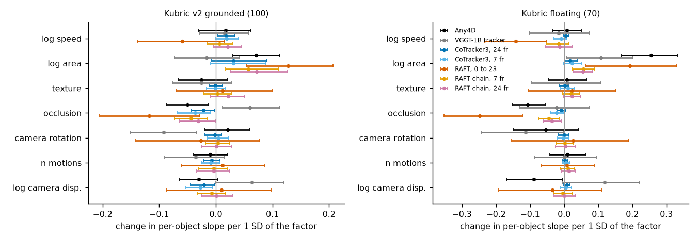


w2_dose_summary.md
Per-object slope (objects with more than 20 moving query points), winsorised to [-0.5, 1.5]. Bins are quintiles of the Any4D objects (number of motions: its values). Regression: OLS of per-object slope on all factors, standardised (coefficient = change in slope per 1 SD), scene-cluster bootstrap 95% CI. Confidence is model-specific and is added in a separate fit.
What each pattern implies: - Regression shrinkage (the prediction moves toward the training-set mean under uncertainty) predicts a LOWER slope at low texture, small area, high occlusion and low confidence, so positive coefficients for texture, area and confidence and a negative one for occlusion. - A structural pull toward the static (camera-only) hypothesis that does not depend on how well the object is seen predicts flat curves for texture, area, occlusion and confidence, with dependence on the geometry instead (camera rotation, camera-induced displacement, number of motions). - Speed: a lower slope at high speed is expected under both readings (large motions are rarer and harder), so it does not separate them; a lower slope at LOW speed points to a fixed offset or a detection threshold.
| model | data | objects | log speed | log area | texture | occlusion | cam rotation | n motions | log cam disp | confidence (added to the same fit) |
|---|---|---|---|---|---|---|---|---|---|---|
| Any4D | v2 | 138 | +0.018 [-0.031, +0.062] | +0.071 [+0.030, +0.113] | -0.025 [-0.067, +0.020] | -0.050 [-0.088, -0.014] | +0.021 [-0.019, +0.059] | -0.010 [-0.040, +0.020] | -0.030 [-0.065, +0.004] | -0.018 [-0.056, +0.024] |
| VGGT-1B tracker | v2 | 138 | +0.016 [-0.029, +0.058] | -0.016 [-0.073, +0.042] | -0.025 [-0.077, +0.027] | +0.060 [+0.011, +0.113] | -0.092 [-0.151, -0.033] | -0.036 [-0.090, +0.015] | +0.064 [+0.000, +0.121] | -0.090 [-0.127, -0.048] |
| CoTracker3, 24 fr | v2 | 138 | +0.019 [+0.004, +0.034] | +0.031 [-0.008, +0.091] | -0.000 [-0.012, +0.012] | -0.022 [-0.043, -0.003] | -0.002 [-0.019, +0.010] | -0.007 [-0.022, +0.007] | -0.021 [-0.045, -0.002] | +0.026 [+0.002, +0.044] |
| CoTracker3, 7 fr | v2 | 138 | +0.019 [+0.000, +0.041] | +0.031 [-0.009, +0.089] | -0.001 [-0.016, +0.016] | -0.037 [-0.068, -0.010] | +0.005 [-0.016, +0.023] | -0.009 [-0.025, +0.008] | -0.027 [-0.053, -0.005] | +0.020 [-0.001, +0.037] |
| RAFT, 0 to 23 | v2 | 138 | -0.059 [-0.139, +0.016] | +0.128 [+0.054, +0.207] | +0.012 [-0.070, +0.100] | -0.117 [-0.205, -0.028] | -0.026 [-0.141, +0.076] | +0.012 [-0.061, +0.086] | +0.010 [-0.087, +0.098] | +0.146 [+0.059, +0.239] |
| RAFT chain, 7 fr | v2 | 138 | +0.007 [-0.016, +0.029] | +0.058 [+0.017, +0.111] | +0.003 [-0.022, +0.027] | -0.043 [-0.073, -0.016] | +0.004 [-0.018, +0.025] | -0.003 [-0.031, +0.021] | -0.007 [-0.032, +0.017] | n/a |
| RAFT chain, 24 fr | v2 | 138 | +0.021 [-0.004, +0.045] | +0.072 [+0.025, +0.126] | +0.022 [-0.010, +0.051] | -0.031 [-0.064, +0.000] | +0.001 [-0.025, +0.028] | -0.004 [-0.034, +0.025] | +0.001 [-0.026, +0.029] | n/a |
| Any4D | v3float | 84 | +0.009 [-0.035, +0.051] | +0.255 [+0.169, +0.332] | +0.008 [-0.047, +0.065] | -0.107 [-0.152, -0.056] | -0.054 [-0.150, +0.041] | +0.010 [-0.043, +0.063] | -0.090 [-0.169, -0.006] | +0.020 [-0.022, +0.068] |
| VGGT-1B tracker | v3float | 84 | -0.017 [-0.103, +0.073] | +0.108 [+0.006, +0.202] | +0.010 [-0.095, +0.108] | -0.023 [-0.129, +0.073] | -0.113 [-0.243, -0.003] | +0.000 [-0.087, +0.094] | +0.119 [-0.004, +0.222] | +0.028 [-0.082, +0.121] |
| CoTracker3, 24 fr | v3float | 84 | +0.005 [-0.001, +0.014] | +0.017 [+0.001, +0.038] | +0.001 [-0.015, +0.013] | -0.008 [-0.019, +0.005] | -0.000 [-0.018, +0.014] | +0.002 [-0.006, +0.010] | +0.008 [-0.001, +0.018] | +0.009 [+0.000, +0.020] |
| CoTracker3, 7 fr | v3float | 84 | -0.009 [-0.030, +0.008] | +0.023 [-0.002, +0.052] | +0.011 [-0.010, +0.030] | -0.022 [-0.040, -0.003] | -0.003 [-0.021, +0.013] | +0.006 [-0.005, +0.017] | +0.005 [-0.010, +0.021] | +0.042 [+0.010, +0.069] |
| RAFT, 0 to 23 | v3float | 84 | -0.143 [-0.232, -0.051] | +0.193 [+0.062, +0.331] | +0.023 [-0.105, +0.152] | -0.247 [-0.352, -0.122] | +0.026 [-0.153, +0.190] | +0.008 [-0.067, +0.089] | -0.034 [-0.193, +0.111] | +0.056 [-0.047, +0.173] |
| RAFT chain, 7 fr | v3float | 84 | -0.016 [-0.053, +0.014] | +0.056 [+0.024, +0.091] | +0.021 [-0.004, +0.045] | -0.045 [-0.075, -0.015] | +0.003 [-0.024, +0.027] | +0.010 [-0.012, +0.031] | -0.004 [-0.032, +0.025] | n/a |
| RAFT chain, 24 fr | v3float | 84 | -0.013 [-0.055, +0.023] | +0.055 [+0.026, +0.084] | +0.023 [-0.002, +0.048] | -0.035 [-0.061, -0.009] | +0.004 [-0.026, +0.032] | +0.014 [-0.009, +0.033] | +0.001 [-0.030, +0.034] | n/a |


Round 2 item 1 (W2): summary table, figure and verdict (pull: 4D-model property or generic shrinkage?)
Status: done, attempt 1, started 2026-10-16 15:55:58, finished 2026-10-16 15:56:05. Raw results, log.

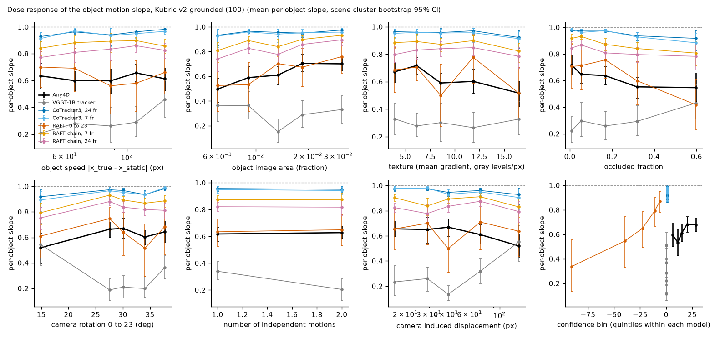
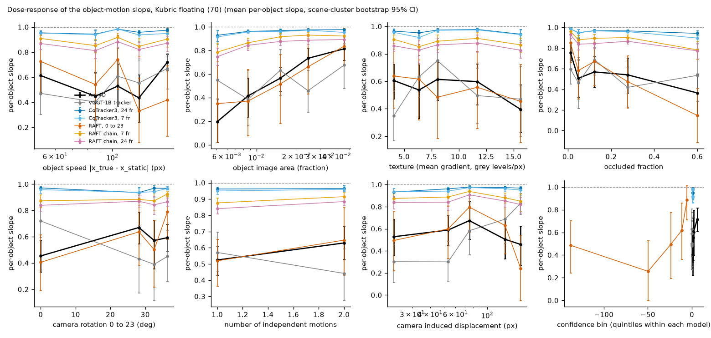
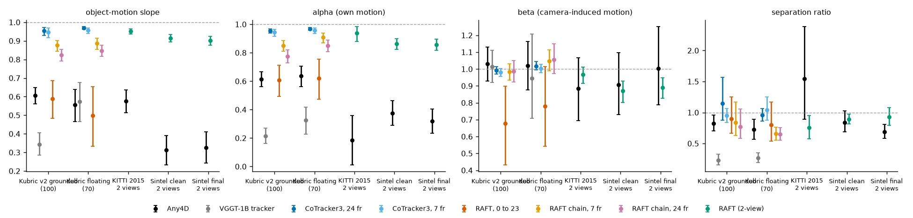
w2_summary_summary.md
Mean over scenes [bootstrap 95% CI]. Kubric slope is slope2d_q and sep_ratio is sep_ratio_q (e5_xm_eval.py definitions, frame 0 to 23); real data use e5_realdata_eval.py. alpha and beta: x_pred - x1 = alpha (x_true - x_static) + beta (x_static - x1) on moving points, only on scenes where they are identifiable (condition number of [A B] at most 10, median |A| and |B| at least 2 px). Last column: paired per-scene difference to Any4D with a two-sided sign test.
| model | data | n scenes | slope | alpha (n identifiable) | beta | beta_static | sep_ratio | slope vs Any4D [sign p] |
|---|---|---|---|---|---|---|---|---|
| Any4D | v2 | 98 | 0.61 [0.56, 0.65] | 0.61 [0.56, 0.67] (84) | 1.03 [0.93, 1.13] | 0.99 [0.99, 1.00] | 0.83 [0.70, 0.96] | reference |
| Any4D | v3float | 65 | 0.56 [0.47, 0.64] | 0.64 [0.56, 0.71] (35) | 1.02 [0.88, 1.16] | 0.99 [0.98, 1.00] | 0.73 [0.57, 0.89] | reference |
| VGGT-1B tracker | v2 | 98 | 0.34 [0.29, 0.41] | 0.22 [0.16, 0.27] (84) | 1.02 [0.92, 1.11] | 1.02 [1.00, 1.04] | 0.23 [0.16, 0.33] | -0.26 [-0.34, -0.18] [p 3.7e-06] |
| VGGT-1B tracker | v3float | 65 | 0.57 [0.47, 0.68] | 0.32 [0.23, 0.42] (35) | 0.95 [0.71, 1.21] | 1.06 [1.02, 1.09] | 0.27 [0.19, 0.35] | +0.02 [-0.10, +0.14] [p 0.620] |
| CoTracker3, 24 fr | v2 | 98 | 0.96 [0.93, 0.97] | 0.95 [0.94, 0.97] (84) | 0.99 [0.97, 1.01] | 0.97 [0.94, 0.99] | 1.14 [0.88, 1.57] | +0.35 [+0.31, +0.39] [p 9.9e-25] |
| CoTracker3, 24 fr | v3float | 65 | 0.97 [0.96, 0.98] | 0.97 [0.96, 0.98] (35) | 1.02 [0.99, 1.05] | 0.97 [0.93, 0.99] | 0.96 [0.86, 1.07] | +0.41 [+0.33, +0.50] [p 3.9e-14] |
| CoTracker3, 7 fr | v2 | 98 | 0.95 [0.92, 0.97] | 0.94 [0.92, 0.97] (84) | 0.98 [0.96, 1.00] | 0.96 [0.93, 0.98] | 0.95 [0.84, 1.07] | +0.34 [+0.30, +0.38] [p 2.4e-23] |
| CoTracker3, 7 fr | v3float | 65 | 0.96 [0.94, 0.97] | 0.96 [0.94, 0.98] (35) | 1.00 [0.98, 1.03] | 0.95 [0.90, 0.98] | 1.04 [0.87, 1.25] | +0.40 [+0.32, +0.49] [p 4.9e-13] |
| RAFT, 0 to 23 | v2 | 98 | 0.59 [0.48, 0.69] | 0.61 [0.49, 0.71] (84) | 0.68 [0.43, 0.90] | 0.60 [0.55, 0.66] | 0.90 [0.66, 1.25] | -0.02 [-0.12, +0.08] [p 0.006] |
| RAFT, 0 to 23 | v3float | 65 | 0.50 [0.33, 0.65] | 0.62 [0.47, 0.75] (35) | 0.78 [0.54, 1.01] | 0.66 [0.58, 0.75] | 0.80 [0.54, 1.17] | -0.06 [-0.20, +0.08] [p 0.136] |
| RAFT chain, 7 fr | v2 | 98 | 0.88 [0.84, 0.90] | 0.85 [0.81, 0.89] (84) | 0.98 [0.93, 1.03] | 0.97 [0.95, 0.99] | 0.84 [0.63, 1.17] | +0.27 [+0.23, +0.31] [p 8.1e-16] |
| RAFT chain, 7 fr | v3float | 65 | 0.89 [0.85, 0.91] | 0.91 [0.87, 0.94] (35) | 1.05 [0.99, 1.11] | 0.96 [0.92, 0.99] | 0.66 [0.56, 0.77] | +0.33 [+0.26, +0.41] [p 4.3e-11] |
| RAFT chain, 24 fr | v2 | 98 | 0.82 [0.79, 0.85] | 0.78 [0.73, 0.82] (84) | 0.99 [0.92, 1.05] | 0.95 [0.92, 0.97] | 0.77 [0.59, 1.06] | +0.22 [+0.17, +0.26] [p 1.4e-12] |
| RAFT chain, 24 fr | v3float | 65 | 0.85 [0.82, 0.88] | 0.85 [0.81, 0.89] (35) | 1.06 [0.97, 1.15] | 0.94 [0.90, 0.98] | 0.65 [0.55, 0.75] | +0.29 [+0.22, +0.37] [p 4.3e-11] |
| Any4D | kitti15_rgb | 195 | 0.58 [0.51, 0.64] | 0.18 [0.01, 0.36] (42) | 0.88 [0.69, 1.07] | 0.84 [0.80, 0.87] | 1.55 [0.89, 2.38] | reference |
| Any4D | sintel_clean | 217 | 0.31 [0.23, 0.39] | 0.38 [0.29, 0.46] (123) | 0.91 [0.73, 1.10] | 0.45 [0.37, 0.53] | 0.84 [0.69, 1.02] | reference |
| Any4D | sintel_final | 217 | 0.33 [0.24, 0.41] | 0.32 [0.24, 0.41] (123) | 1.00 [0.79, 1.25] | 0.48 [0.39, 0.58] | 0.69 [0.59, 0.81] | reference |
| RAFT | kitti15_rgb | 195 | 0.95 [0.94, 0.96] | 0.94 [0.88, 0.98] (41) | 0.97 [0.92, 1.01] | 0.91 [0.88, 0.92] | 0.76 [0.57, 0.95] | +0.38 [+0.31, +0.44] [p 9.0e-18] |
| RAFT | sintel_clean | 217 | 0.91 [0.89, 0.93] | 0.86 [0.82, 0.90] (122) | 0.87 [0.80, 0.93] | 0.92 [0.80, 0.99] | 0.89 [0.81, 0.98] | +0.60 [+0.52, +0.68] [p 2.3e-31] |
| RAFT | sintel_final | 217 | 0.90 [0.88, 0.92] | 0.86 [0.82, 0.90] (122) | 0.89 [0.83, 0.95] | 0.98 [0.95, 1.01] | 0.93 [0.80, 1.08] | +0.57 [+0.49, +0.66] [p 2.3e-27] |

Thresholds: pull if the slope CI is below 0.9, no pull if it is above 0.9; shrinkage toward zero image motion if the beta CI is below 0.95 and alpha is not different from beta (sign test p >= 0.05); camera-motion pull if beta is near 1 and alpha below 1; smoothing if the interior slope is higher than the edge slope (sign test p < 0.05).
See w2_dose summary for all models and the figures fig_w2_dose_v2.png, fig_w2_dose_v3float.png, fig_w2_dose_regression.png.
Kubric v2 grounded (100): Any4D slope 0.61 [0.56, 0.65], VGGT tracker 0.34 [0.29, 0.41], CoTracker3 0.96 [0.93, 0.97], RAFT 0.59 [0.48, 0.69]; 0.88 [0.84, 0.90]; 0.82 [0.79, 0.85]. The best non-reconstruction baseline recovers clearly more object motion than Any4D (CIs do not overlap). Kubric floating (70): Any4D slope 0.56 [0.47, 0.64], VGGT tracker 0.57 [0.47, 0.68], CoTracker3 0.97 [0.96, 0.98], RAFT 0.50 [0.33, 0.65]; 0.89 [0.85, 0.91]; 0.85 [0.82, 0.88]. The best non-reconstruction baseline recovers clearly more object motion than Any4D (CIs do not overlap). KITTI 2015, 2 views: Any4D slope 0.58 [0.51, 0.64], RAFT 0.95 [0.94, 0.96]. Sintel clean, 2 views: Any4D slope 0.31 [0.23, 0.39], RAFT 0.91 [0.89, 0.93]. Sintel final, 2 views: Any4D slope 0.33 [0.24, 0.41], RAFT 0.90 [0.88, 0.92]. If the dedicated trackers (CoTracker3, RAFT) recover close to all object motion on the same scenes while Any4D and the VGGT tracker head do not, the pull is a property of the reconstruction models and not a generic property of dense correspondence under uncertainty. If the baselines show the same deficit, with alpha close to beta, it is generic shrinkage. The decomposition rows above say which of the two readings each model follows.
Item 10: render 200 v2-grounded training scenes (seeds 2001-2200, approved settings)
Status: done, attempt 1, started 2026-10-16 15:56:13, finished 2026-10-16 19:20:03. Raw results, log.
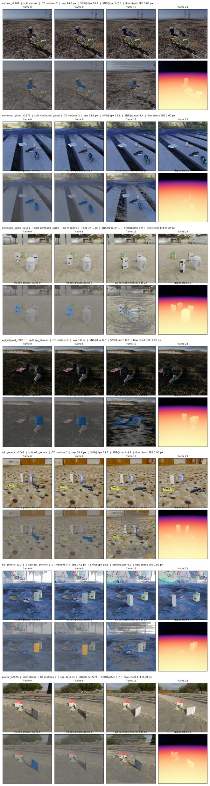
ft_render_v2_summary.md
Training scenes for item 10 (fine-tuning), rendered with the approved generator settings into /media/workbench/zone_x/e5_multibody/data/ft_train_v2.
| split | scenes | median sep (px) | median SNR at 1 px |
|---|---|---|---|
| camrot | 25 | 17.7 | 12.5 |
| confound_glued | 22 | 29.2 | 20.6 |
| confound_same | 25 | 32.4 | 22.9 |
| epi_aligned | 40 | 0.0 | 0.0 |
| n2_generic | 30 | 30.5 | 21.6 |
| n3_generic | 30 | 29.5 | 20.9 |
| planar | 25 | 33.6 | 23.8 |
Item 10: render 200 floating training scenes (seeds 2201-2400, approved v3float settings)
Status: done, attempt 1, started 2026-10-16 19:20:12, finished 2026-10-16 22:48:04. Raw results, log.
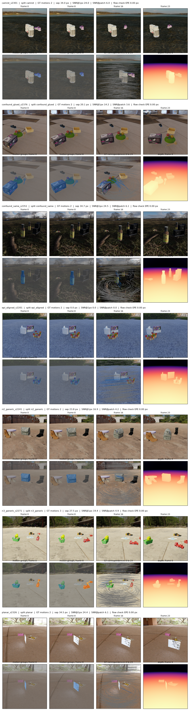
ft_render_float_summary.md
Training scenes for item 10 (fine-tuning), rendered with the approved generator settings into /media/workbench/zone_x/e5_multibody/data/ft_train_float.
| split | scenes | median sep (px) | median SNR at 1 px |
|---|---|---|---|
| camrot | 25 | 20.2 | 14.3 |
| confound_glued | 22 | 23.3 | 16.5 |
| confound_same | 25 | 32.9 | 23.2 |
| epi_aligned | 40 | 0.0 | 0.0 |
| n2_generic | 30 | 30.9 | 21.9 |
| n3_generic | 27 | 25.1 | 17.7 |
| planar | 25 | 34.5 | 24.4 |
Item 10: evaluate base Any4D with the fine-tune evaluation (Kubric v2/v3float/v3far, internals, KITTI, Sintel)
Status: FAILED, attempt 4, started 2026-10-17 02:48:00, finished 2026-10-17 02:48:38. Raw results, log.
Item 10: pilot fine-tune (heads_sf, 1000 steps) to choose the number of steps
Status: done, attempt 3, started 2026-10-17 01:01:23, finished 2026-10-17 02:31:45. Raw results, log.
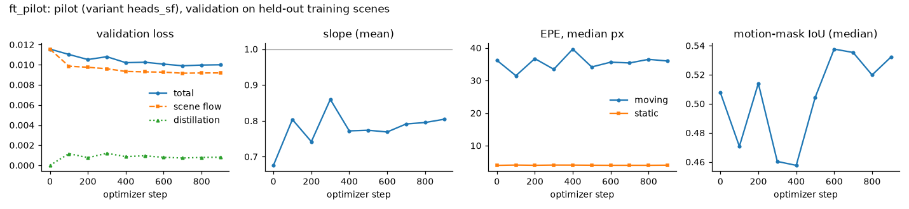
ft_pilot_summary.md
Pilot run to choose the number of fine-tuning steps (variant heads_sf = five-head LoRA + scene-flow head, the largest variant).
| step | loss | slope | EPE moving | EPE static | mask IoU |
|---|---|---|---|---|---|
| 0 | 0.0116 | 0.676 | 36.2 | 3.94 | 0.508 |
| 100 | 0.0110 | 0.804 | 31.5 | 4.04 | 0.471 |
| 200 | 0.0105 | 0.742 | 36.7 | 3.96 | 0.514 |
| 300 | 0.0108 | 0.860 | 33.4 | 4.04 | 0.460 |
| 400 | 0.0102 | 0.772 | 39.6 | 4.03 | 0.458 |
| 500 | 0.0102 | 0.774 | 34.2 | 3.98 | 0.504 |
| 600 | 0.0101 | 0.769 | 35.6 | 3.96 | 0.538 |
| 700 | 0.0099 | 0.791 | 35.4 | 3.96 | 0.535 |
| 800 | 0.0100 | 0.795 | 36.5 | 3.96 | 0.520 |
| 900 | 0.0100 | 0.804 | 36.0 | 3.99 | 0.532 |
Item 10: fine-tune (a) LoRA r8 on the five supply heads' slices
Status: FAILED, attempt 4, started 2026-10-17 02:48:46, finished 2026-10-17 02:49:24. Raw results, log.
Item 10: fine-tune (d) control: LoRA r8 on 5 matched random heads
Status: FAILED, attempt 4, started 2026-10-17 02:49:32, finished 2026-10-17 02:50:10. Raw results, log.
Review item W3 pilot: 2 scenes each of epi_accel, epi_const (paired), epi_sizerand, epi_sizematch, with GT checks
Status: done, attempt 1, started 2026-10-16 22:48:29, finished 2026-10-16 22:53:06. Raw results, log.
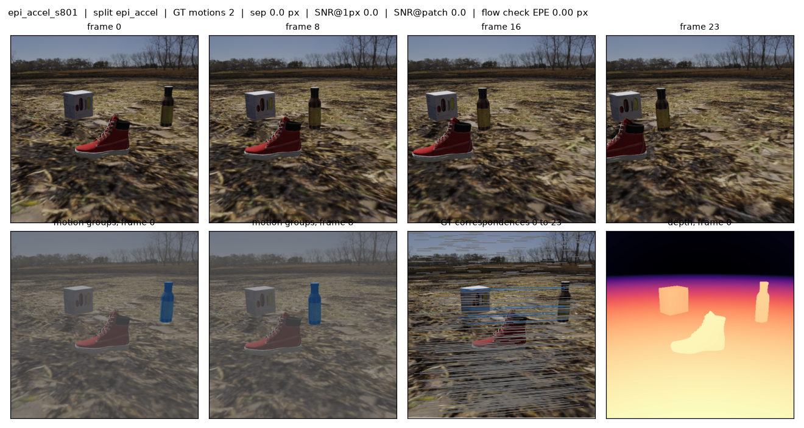
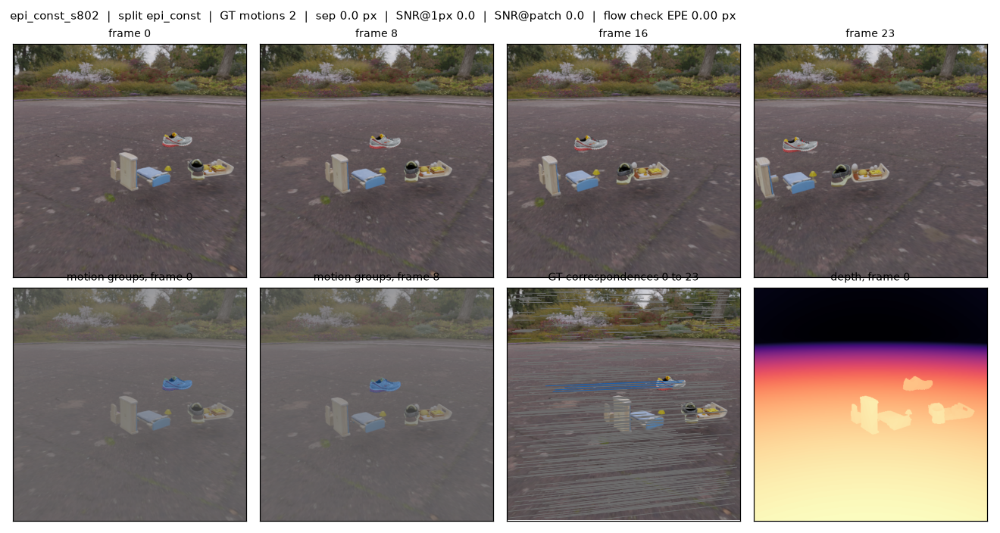
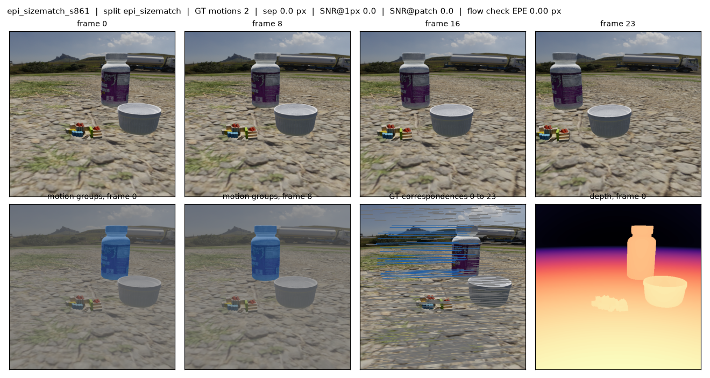
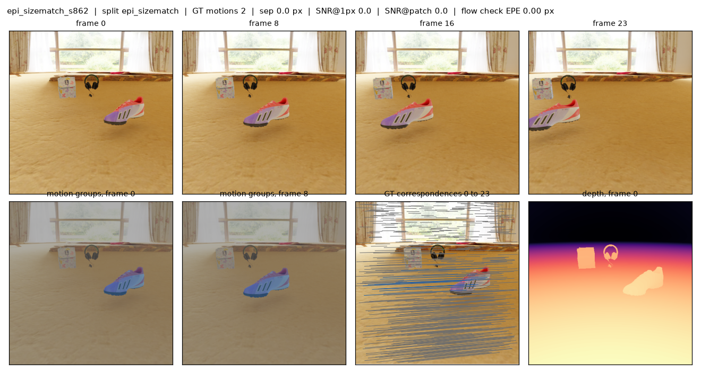
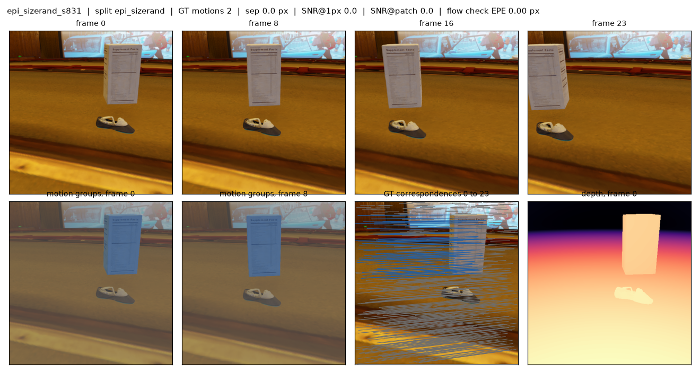
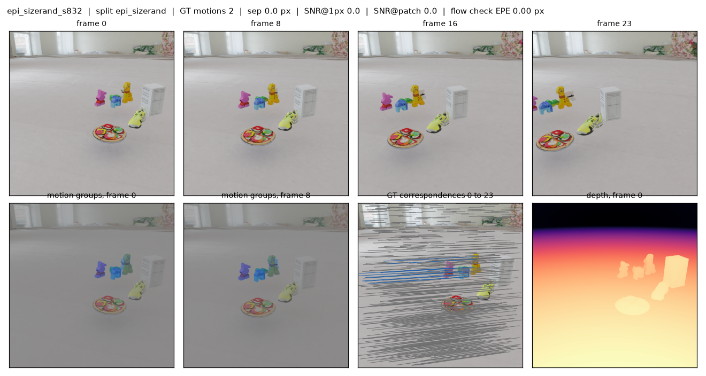
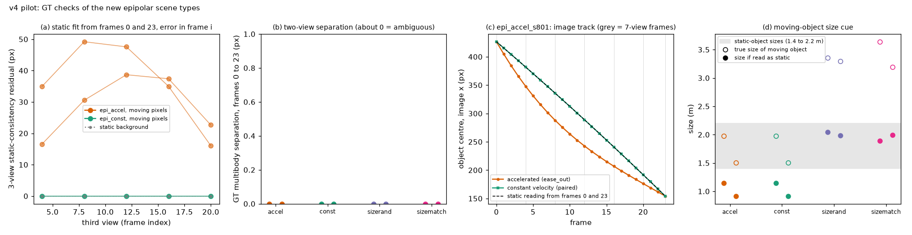
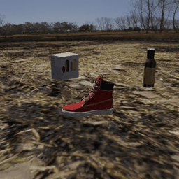
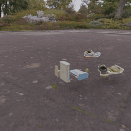
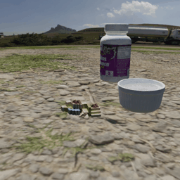
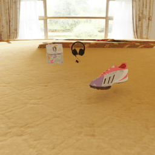
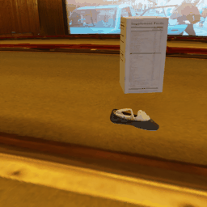
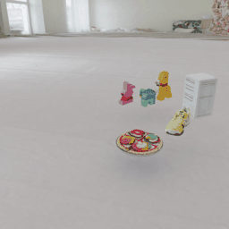
v4_pilot_summary.md
Two scenes per new split, rendered with the v3float settings (floating, shadowless, sizes 1.4 to 2.2 m for static objects). Contact sheets and GIFs are in sheets/. The scaled task v4_scale_epi waits for the gate approvals/v4_visual.
What to check visually: - epi_accel vs epi_const with the same seed: frames 0 and 23 look the same; in the GIF the accelerated object starts or stops while the constant one glides. - epi_sizerand: the moving object can be much smaller or larger than the static objects. - epi_sizematch: the moving object is large (2.2 to 4.4 m), so read as a static object at the closer ambiguous depth it would be of typical size. - Nothing touches the floor, no shadows, every object stays in view.
Scenes checked: 8; scenes with errors: 0.
All numbers come from Kubric ground truth (depth, segmentation, camera and object matrices).
| split | n | sep GT 0 to 23 (px), median [min, max] | 3-view residual, moving, frame 12 (px), median [min, max] | 3-view residual, background, frame 12 (px) | max centre gap from static reading (px) | static objects per scene, mean |
|---|---|---|---|---|---|---|
| epi_accel | 2 | 0.00 [0.00, 0.00] | 43.1 [38.7, 47.6] | 0.00 | 43.7 | 2.50 |
| epi_const | 2 | 0.00 [0.00, 0.00] | 0.0 [0.0, 0.0] | 0.00 | 0.0 | 2.50 |
| epi_sizerand | 2 | 0.00 [0.00, 0.00] | 0.0 [0.0, 0.0] | 0.00 | 0.0 | 2.00 |
| epi_sizematch | 2 | 0.00 [0.00, 0.00] | 0.0 [0.0, 0.0] | 0.00 | 0.0 | 2.00 |
| split | n | true moving size (m), median [min, max] | size if read as static (m), median [min, max] | max abs error of static scale vs 1/(1+k) |
|---|---|---|---|---|
| epi_accel | 2 | 1.74 [1.51, 1.98] | 1.03 [0.92, 1.15] | 5.8e-15 |
| epi_const | 2 | 1.74 [1.51, 1.98] | 1.03 [0.92, 1.15] | 5.8e-15 |
| epi_sizerand | 2 | 3.33 [3.29, 3.36] | 2.01 [1.98, 2.04] | 2.9e-15 |
| epi_sizematch | 2 | 3.42 [3.19, 3.64] | 1.94 [1.89, 1.99] | 2.8e-15 |
Static objects in every split are 1.4 to 2.2 m (the v3float range).

How to read the figure: (a) for epi_accel the static fit from frames 0 and 23 misses the object in a third view by tens of pixels, while for epi_const and for the background it fits to about 0 px. (b) Two-view separation is about 0 in every split, so frames 0 and 23 alone are ambiguous. (c) The accelerated object's image track leaves the track of its static reading (the constant-velocity object stays on it). (d) Size randomisation decouples apparent size from the static interpretation.
Review item W3: render 30 scenes per new epipolar split (120 scenes) + GT checks
Status: done, attempt 1, started 2026-10-16 22:53:45, finished 2026-10-17 01:01:15. Raw results, log.
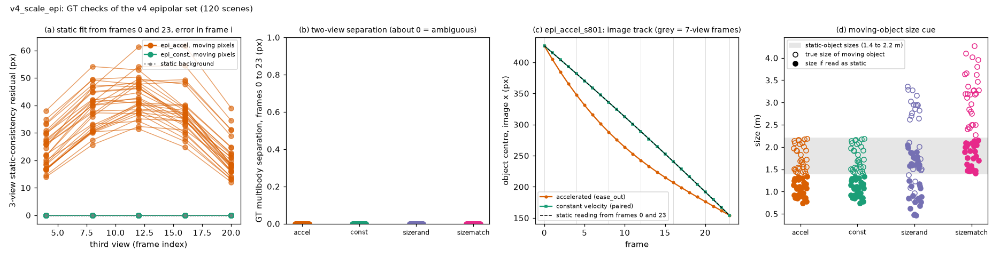
v4_scale_epi_summary.md
Scenes checked: 120; scenes with errors: 0.
All numbers come from Kubric ground truth (depth, segmentation, camera and object matrices).
| split | n | sep GT 0 to 23 (px), median [min, max] | 3-view residual, moving, frame 12 (px), median [min, max] | 3-view residual, background, frame 12 (px) | max centre gap from static reading (px) | static objects per scene, mean |
|---|---|---|---|---|---|---|
| epi_accel | 30 | 0.00 [0.00, 0.00] | 41.9 [31.4, 61.3] | 0.00 | 41.2 | 2.57 |
| epi_const | 30 | 0.00 [0.00, 0.00] | 0.0 [0.0, 0.0] | 0.00 | 0.0 | 2.57 |
| epi_sizerand | 30 | 0.00 [0.00, 0.00] | 0.0 [0.0, 0.0] | 0.00 | 0.0 | 2.23 |
| epi_sizematch | 30 | 0.00 [0.00, 0.00] | 0.0 [0.0, 0.0] | 0.00 | 0.0 | 1.77 |
| split | n | true moving size (m), median [min, max] | size if read as static (m), median [min, max] | max abs error of static scale vs 1/(1+k) |
|---|---|---|---|---|
| epi_accel | 30 | 1.73 [1.41, 2.19] | 1.02 [0.74, 1.34] | 1.0e-14 |
| epi_const | 30 | 1.73 [1.41, 2.19] | 1.02 [0.74, 1.34] | 1.0e-14 |
| epi_sizerand | 30 | 2.36 [0.81, 3.36] | 1.38 [0.47, 2.04] | 6.3e-15 |
| epi_sizematch | 30 | 3.20 [2.28, 4.27] | 1.78 [1.41, 2.15] | 6.9e-15 |
Static objects in every split are 1.4 to 2.2 m (the v3float range).

How to read the figure: (a) for epi_accel the static fit from frames 0 and 23 misses the object in a third view by tens of pixels, while for epi_const and for the background it fits to about 0 px. (b) Two-view separation is about 0 in every split, so frames 0 and 23 alone are ambiguous. (c) The accelerated object's image track leaves the track of its static reading (the constant-velocity object stays on it). (d) Size randomisation decouples apparent size from the static interpretation.